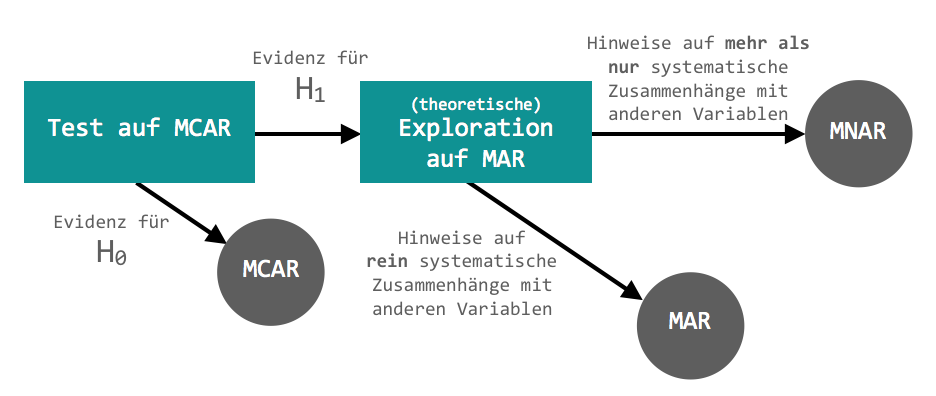
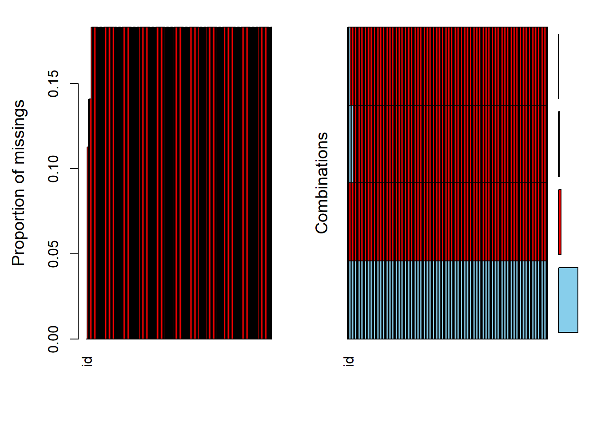
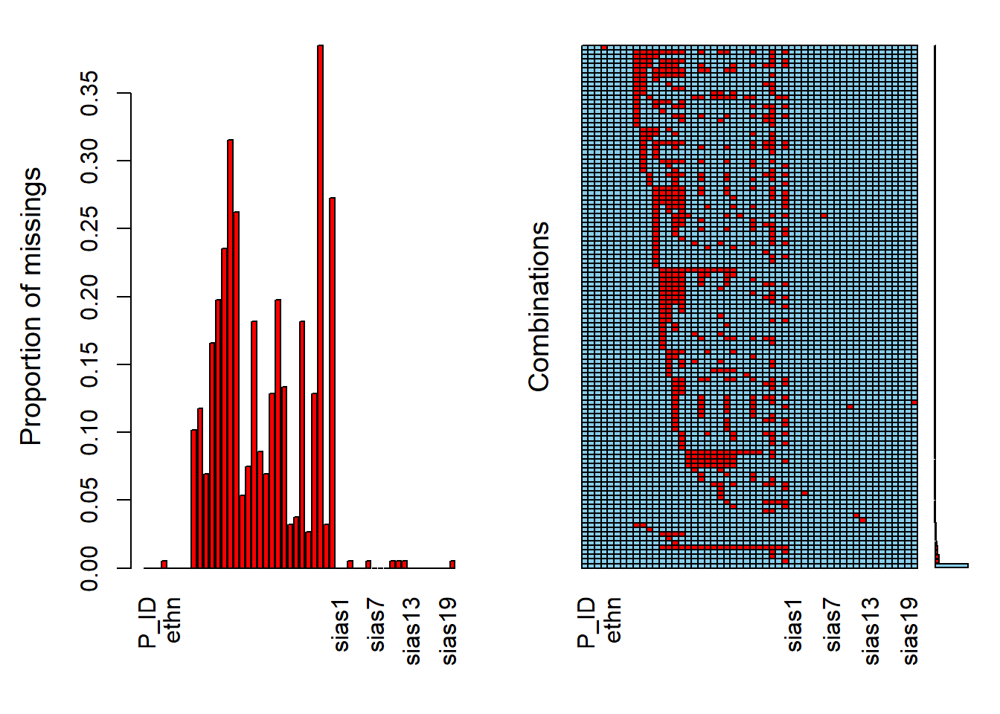

Chapter 9 Fehlende Werte
Einleitung
Es kann in der Praxis häufiger vorkommen, dass Datensätze unvollständig sind z.B. wenn Teilnehmende einer Befragung nicht alle Fragen beantworten. Diese fehlenden Einträge nennt man Missings. In R werden sie (bei numeric) zumeist mit NA (not available) gekennzeichnet.
Welche Kodierungen für fehlende Werte gibt es neben NA noch?
Beim Datentyp numeric (Zahlen) sind fehlende Werte durch NA oder durch NaN (Not a Number) gekennzeichnet.
num_vector <- c(1, 4, NA, NaN)
num_vector## [1] 1 4 NA NaNis.na(num_vector)## [1] FALSE FALSE TRUE TRUEDie Funktion is.na() gibt für jedes Element ein TRUE wenn es fehlt bzw. ein FALSE wenn es vorhanden ist. Wir werden im Laufe des Kapitels verschiedene Kombinationsmöglichkeiten für diese Funktion kennen lernen.
NaN entstehen z.B. bei unlösbaren Rechnungen wie Division durch \(0\).
num_vector[1] <- num_vector[4]/0
num_vector## [1] NaN 4 NA NaNis.na(num_vector)## [1] TRUE FALSE TRUE TRUEBeim Datentyp character (Buchstaben, Zeichen) hingegen könnten fehlende Eingaben auch durch "" (leere Felder) gekennzeichnet sein z.B. wenn bei Freitextfeldern in einer Umfrage nichts eingegeben wurde. Das wird in R aber nicht automatisch als fehlender Wert erkannt.
Achtung:Wir sehen nachfolgend auch verdeutlicht, dassNAeine selbstständige Kodierung ist, und nicht als character kodiert wird.
char_vec <- c(NA, "NA", "")
char_vec## [1] NA "NA" ""is.na(char_vec)## [1] TRUE FALSE FALSESpäter lernen wir, wie wir Werte auf NA umkodieren können.
Wir beschränken uns in vorliegendem Kapitel auf NA in numerischen Datentypen (d.h. quantitative Daten).
Fehlende Werte sind grundsätzlich mit drei Schwierigkeiten verbunden:
- Der Datenausfall führt zu einer reduzierten Stichprobengröße \(N\) welche wiederum zu einer verringerten Effizienz bei der Parameterschätzung und geringerer Power führt.
- Die Auswertung wird erschwert, weil viele statistische Verfahren vollständige Datensätze voraussetzen.
- Wenn systematische Unterschiede zwischen den beobachteten und den fehlenden Daten bestehen könnten die Parameterschätzungen verzerrt sein.
Daher ist es sehr wichtig, sich vor der Auswertung einen Überblick über die fehlenden Werte zu verschaffen.
In diesem Kapitel schauen wir uns an, ob und wenn ja, wo und wie viele Missings sich im Datensatz befinden. Außerdem gibt es einen groben Überblick darüber, ob Missings zufällig sind und wie man mit ihnen umgehen kann.
Der Umgang mit Missings ist ein komplexes Thema. In diesem Kapitel werden wir uns auf zwei gängige Methoden zum Umgang mit Missings beschränken. In Abhängigkeit der eigenen Fragestellung empfiehlt es sich, passende Methoden zu recherchieren.
Beispieldatensatz für dieses Kapitel
Das ist der Code für den Datensatz, an dem wir in diesem Kapitel arbeiten werden. Wenn du die Funktionen, die in diesem Kapitel vorgestellt werden, ausprobieren möchtest, führe den Code aus und erstelle den Datensatz.
# Data Frame erstellen
daten <- matrix(c(-99, 0, 1, 3, 2,
1, 2, 3, 2, 0,
NA, 1, 3, 99, 0,
1, 3, 3, 1, 2,
2, 0, 2, 99, 3), nrow = 5, ncol = 5)
# in Dataframe umwandeln
daten <- data.frame(daten)
# Spalten und Zeilen benennen
colnames(daten) <- c("Var_1", "Var_2", "Var_3", "Var_4", "Var_5")
rownames(daten) <- c("Vpn_1", "Vpn_2", "Vpn_3", "Vpn_4", "Vpn_5")## Var_1 Var_2 Var_3 Var_4 Var_5
## Vpn_1 -99 1 NA 1 2
## Vpn_2 0 2 1 3 0
## Vpn_3 1 3 3 3 2
## Vpn_4 3 2 99 1 99
## Vpn_5 2 0 0 2 3
Achtung: Wenn du Variablen, die Missings enthalten, für eine Analyse nutzt, denke immer daran, dass sich damit auch die Stichprobengröße \(N\) für diese spezifische Auswertung ändert.
9.1 Sind die Missings einheitlich kodiert?
In manchen Anwendungen werden Missings nicht mit NA sondern anderweitig kodiert (z.B. bei Unipark mit 99 oder -99). Daher müssen wir dafür sorgen, dass R Missings auch als solche erkennt. Das gewährleistet man, indem man alle Missings auf NA setzt.
Wenn man weiß, wie Missings im Datensatz kodiert sind, kann man gleich zu Wie kann ich die Missings auf NA setzen? springen. Wenn man weiß, dass alle Missings einheitlich mit NA kodiert sind, kann man den ganzen Abschnitt auslassen.
9.1.1 Wie kann ich prüfen, ob die Missings einheitlich kodiert sind?
Um herauszufinden, ob auch alle Missings einer Variablen korrekterweise mit NA kodiert sind, vergleichen wir die angegebenen Werte der Variablen in unseren Daten mit den möglichen Ausprägungen der Variablen (die wir zumeist im Codebuch finden; in unserem Fall steht diese Information in der Einleitung).
Dazu kombinieren wir die Funktion unique(), die uns alle Werte eines Vektors (einmalig) ausgibt, mit der Funktion sort(), die uns die Werte noch sortiert (standarmäßig aufsteigend). Mit na.last = TRUE gibt uns sort() sogar die Information zum Vorhandensein von Missings am Ende aus.
sort(unique(daten$Var_3), na.last=TRUE)## [1] 0 1 3 99 NADa wir wissen, dass Var_3 nur die Ausprägungen \(0,1,2,3\) annehmen kann, können wir schließen, dass \(99\) auch ein Missing sein muss.
Wenn man also alle möglichen Ausprägungen der Variablen kennt, kann man auf diese Weise einfach herausfinden, ob noch anderweitig kodierte Missings im Datensatz vorliegen.
Wenn der Datensatz sehr groß ist, ist der oben gezeigte Ansatz allerdings sehr mühsam. Dann können wir die Funktion sapply() integrieren, um unique() und sort() auf jede Variable im Datensatz anzuwenden. Diese hat die Form sapply(Daten, Funktion).
Da wir zwei Funktionen auf den Datensatz anwenden wollen - unique() und sort() - müssen wir sapply() zweimal anwenden:
sapply(sapply(daten, unique), sort, na.last=TRUE)## $Var_1
## [1] -99 0 1 2 3
##
## $Var_2
## [1] 0 1 2 3
##
## $Var_3
## [1] 0 1 3 99 NA
##
## $Var_4
## [1] 1 2 3
##
## $Var_5
## [1] 0 2 3 99In Var_1 gibt es die Ausprägung -99 und in Var_5 die Ausprägung 99, welche keine möglichen Ausprägungen sind. Es ist davon auszugehen, dass das ebenso Kodierungen für fehlende Werte sind.
9.1.2 Wie kann ich die Missings auf NA setzen?
Nun wollen wir diese Missings umkodieren. Vorher wollen wir uns noch einmal anschauen, was passiert, wenn man das nicht macht.
Wenn man Missings im Datensatz nicht einheitlich auf NA kodiert, nimmt R an, dass es sich um gültige Werte handelt. Das führt dann zu falschen Ergebnissen. Das schauen wir uns exemplarisch einmal am Mittelwert der Spalte Var_3 an.
## Var_1 Var_2 Var_3 Var_4 Var_5
## Vpn_1 -99 1 NA 1 2
## Vpn_2 0 2 1 3 0
## Vpn_3 1 3 3 3 2
## Vpn_4 3 2 99 1 99
## Vpn_5 2 0 0 2 3# Mittelwert vor Umkodierung
mean(daten$Var_3, na.rm=TRUE)## [1] 25.75Nun kodieren wir die Missings in Var_3 einheitlich um …
# Umkodierung für einzelne Variablen
daten$Var_3[daten$Var_3 == 99] <- NADer Befehl ersetzt in daten Elemente der Spalte Var_3, welche die Ausprägung 99 besitzen, mit NA.
## Var_1 Var_2 Var_3 Var_4 Var_5
## Vpn_1 -99 1 NA 1 2
## Vpn_2 0 2 1 3 0
## Vpn_3 1 3 3 3 2
## Vpn_4 3 2 NA 1 99
## Vpn_5 2 0 0 2 3… und schauen uns den Mittelwert von Var_3 wieder an.
# Mittelwert nach Umkodierung
mean(daten$Var_3, na.rm=T)## [1] 1.333333Hätten wir die Missings nicht einheitlich auf NA kodiert, hätten wir errechnet, dass der Mittelwert von Var_3 25.75 anstatt ~1.33 betragen würde.
Wir sehen also, dass es sehr wichtig ist, in Erfahrung zu bringen, ob im Datensatz alle Missings einheitlich auf NA gesetzt sind, und wenn nicht, diese einheitlich zu kodieren, da man sonst falsche Ergebnisse erhält.
Jetzt enthält die Spalte Var_3 schon keine Elemente mit der Ausprägung 99 mehr, aber in Var_1 gibt es noch ein -99 und in Var_5 noch ein 99.
Um nicht einzeln Spalten und Ausprägungen ansprechen zu müssen, kann man alles in einem Befehl kombinieren.
# Umkodierung für den gesamten Datensatz
daten[daten == 99 | daten == -99] <- NAHiermit werden im gesamten daten jene Elemente, welche die Ausprägung 99 oder -99 besitzen, durch NA ersetzt.
9.2 2. Enthält ein Datensatz Missings?
Wenn wir wissen wie unsere fehlenden Werte kodiert sind, wollen wir in einem nächsten Schritt natürlich wissen, ob ein Datensatz überhaupt Missings enthält. Es gibt zahlreiche Ansätze, um das herauszufinden. Einige davon schauen wir uns einmal genauer an.
Bei kleineren Datensätzen ist eine visuelle Inspektion möglich. Dafür nutzt man entweder View() (Großbuchstabe am Anfang beachten!) oder man klickt auf den Datensatz im Environment (oberes rechtes Panel).
## Var_1 Var_2 Var_3 Var_4 Var_5
## Vpn_1 NA 1 NA 1 2
## Vpn_2 0 2 1 3 0
## Vpn_3 1 3 3 3 2
## Vpn_4 3 2 NA 1 NA
## Vpn_5 2 0 0 2 3Um zu überprüfen, ob ein Datensatz mindestens einen fehlenden Wert enthält, kann man anyNA() nutzen. Man bekommt ein TRUE (d.h. ja, mindestens ein Missing enthalten) oder FALSE (d.h. nein, keine Missings enthalten) ausgegeben.
anyNA(daten)## [1] TRUEUm einen groben Eindruck davon zu bekommen, welche Elemente fehlen, kann man is.na() nutzen. Der Output besteht aus FALSE oder TRUE für jedes Element des Datensatzes. TRUE bedeutet dabei, dass an dieser Stelle ein Missing ist.
is.na(daten) ## Var_1 Var_2 Var_3 Var_4 Var_5
## Vpn_1 TRUE FALSE TRUE FALSE FALSE
## Vpn_2 FALSE FALSE FALSE FALSE FALSE
## Vpn_3 FALSE FALSE FALSE FALSE FALSE
## Vpn_4 FALSE FALSE TRUE FALSE TRUE
## Vpn_5 FALSE FALSE FALSE FALSE FALSEAchtung: Bei
is.na()undanyNA()wird auchNaN(Not a number; entsteht bei unlösbaren Rechnungen) mitgezählt. Da Zweitere aber wesentlich seltener vorkommen, konzentrieren wir uns nur aufNA.
Den logischen Vektor, den is.na() erzeugt, kann man mit which() kombinieren, um sich die Positionen der Missings ausgeben zu lassen. Mithilfe des Arguments arr.ind = TRUE lässt man sich die Reihe und die Spalte dieser ausgeben.
Ohne arr.ind = TRUE würde man nur die Indizes ausgegeben bekommen. Für Matrizen sind diese weniger leicht zu nutzen, weil die Nummerierung fortlaufend spaltenweise vorliegt. In unserem Fall einer 5 x 5 Matrix heißt das z.B., dass das Element in der 1. Zeile der 3. Spalte (also der eine fehlende Wert) den Index 11 trägt.
Bei Vektoren kann man arr.ind = TRUE weglassen, da diese entweder nur aus einer Spalte oder einer Zeile bestehen.
which(is.na(daten), arr.ind = TRUE)## row col
## Vpn_1 1 1
## Vpn_1 1 3
## Vpn_4 4 3
## Vpn_4 4 59.3 3. Wie kann man die Missings zählen (und verorten)?
Die genaue Anzahl der Missings zu kennen ist wichtig, um ein Gefühl dafür zu kriegen, wie vollständig ein Datensatz ist. Dazu kombinieren wir die is.na()-Funktion mit anderen Funktionen, die FALSE (d.h. vorhandenen Werte) und TRUE (d.h. fehlenden Werte) zählen.
9.3.1 Alle Missings eines Datensatzes
Zuerst schauen wir uns die Gesamtanzahl der Missings aller Elemente im Datensatz an.
table(is.na(daten))##
## FALSE TRUE
## 21 49.3.2 Missings in einzelnen Spalten oder Zeilen
Spaltenweises Zählen der Missings gibt Informationen über mögliche Probleme mit bestimmten Variablen. Zeilenweises Zählen der Missings gibt beispielsweise Informationen über Teilnehmende, die die Fragen nicht vollständig beantwortet haben.
Es ist daher wichtig, sich einen Überblick darüber zu machen, ob sich bei bestimmten Variablen oder bei bestimmten Personen besonders viele Missings häufen. Wenn das der Fall sein sollte, muss man überlegen, wie man damit umgeht (dazu mehr im späteren Verlauf).
Wenn wir eine bestimmte Spalte oder Zeile betrachten möchten, können wir die is.na()-Funktion mit der table()-Funktion kombinieren. Zweiteres sorgt dafür, dass wir eine Häufigkeitstabelle von TRUE und FALSE ausgegeben bekommen.
Wir können auf verschiedenem Wege auf eine Spalte bzw. Zeile eines Datensatzes referenzieren.
table(is.na(daten$Var_1)) # Datensatz$Spaltenname##
## FALSE TRUE
## 4 1table(is.na(daten["Var_1"])) # Datensatz["Spaltenname"]##
## FALSE TRUE
## 4 1table(is.na(daten["Vpn_1",])) # Datensatz["Zeilenname"]##
## FALSE TRUE
## 3 2table(is.na(daten[,1])) # Datensatz[,Spaltenindex]##
## FALSE TRUE
## 4 1table(is.na(daten[1,])) # Datensatz[,Zeilenindex]##
## FALSE TRUE
## 3 2Achtung: Die ersten drei vorgestellten Möglichkeiten,
$und Datensatz[“Spalten- bzw. Zeilenname”], funktionieren nur bei Dataframes, und nicht bei Matrizen. Die Möglichkeit der Indexierung können wir auch bei Matrizen nutzen.
9.3.3 Missings in allen Spalten oder Zeilen
Wenn man sich einen Überblick über die Missings in allen Variablen bzw. bei allen Personen verschaffen möchte, kann man dafür colSums() bzw. rowSums() mit dem is.na()-Befehl kombinieren. Damit werden spalten- bzw. zeilenweise Summen von TRUE (d.h. den Missings) gebildet.
Um die Größenordnung der Missings besser beurteilen zu können, sollte man sich der maximal möglichen Anzahl der Elemente in einer Spalte bzw. Zeile bewusst sein. Diese können wir mit nrow() bzw. ncol() in Erfahrung bringen.
# Übersicht der Missings in allen Variablen (Spalten)
colSums(is.na(daten))## Var_1 Var_2 Var_3 Var_4 Var_5
## 1 0 2 0 1# ... im Vergleich zur maximalen Anzahl an Beantwortungen
nrow(daten)## [1] 5# Übersicht der Missings in allen Personen (Zeilen)
rowSums(is.na(daten))## Vpn_1 Vpn_2 Vpn_3 Vpn_4 Vpn_5
## 2 0 0 2 0# ... im Vergleich zur maximalen Anzahl der beantwortbaren Fragen
ncol(daten)## [1] 59.3.3.1 Visualisierung der Missings
Mit der Funktion aggr() aus dem Paket VIM kann man sich zwei Plots ausgeben lassen, die den relativen Anteil von Missings in den einzelnen Variablen und die Anzahl an Missings in bestimmten Kombinationen von Variablen (d.h. in den Zeilen) ausgeben.
Wenn man summary(aggr()) nutzt, bekommt man sowohl die grafische Visualisierung als auch eine Übersicht der Häufigkeiten.
# install.packages("VIM")
library(VIM)
summary(aggr(daten))
##
## Missings per variable:
## Variable Count
## Var_1 1
## Var_2 0
## Var_3 2
## Var_4 0
## Var_5 1
##
## Missings in combinations of variables:
## Combinations Count Percent
## 0:0:0:0:0 3 60
## 0:0:1:0:1 1 20
## 1:0:1:0:0 1 20Im linken Plot sehen wir, dass nur Missings in Var_1, Var_3 und Var_5 vorhanden sind. Außerdem sehen wir auf der \(y\)-Achse den relativen Anteil an Fällen in den Variablen. In der Übersicht unter der Tabelle sehen wir die absoluten Häufigkeiten für alle Variablen (Missings per variable). Im rechten Plot sehen wir die vorhanden Kombinationen von Missings in den Variablen. Blau zeigt an, dass kein Missing vorhanden ist; rot zeigt an, dass ein Missing vorhanden ist. Beispielsweise zeigt die unterste Reihe (die komplett blau ist) eine Kombination, in der keine Missings in Variablen vorhanden sind. Rechts daneben sieht man einen Balken, der den Anteil dieser Kombination im Verhältnis zu den anderen Kombinationen darstellt. Der Balken in der untersten Reihe ist der größte, d.h. dass diese Kombination am häufigsten vorkommt und somit die meisten Fälle (Zeilen) im Datensatz keine Missings enthalten. Leider bekommen wir hier keine Häufigkeiten dafür angezeigt. Dazu können wir aber in die unten stehende Übersicht schauen. (Missings in combinations of variables), in der wir absolute und relative Häufigkeiten ausgegeben bekommen.
9.4 Sind die Missings zufällig?
Am Anfang des Kapitels wurde bereits erwähnt, dass systematische Missings eine Auswertung verzerren können. Was es aber genau bedeutet, wenn Missings zufällig oder nicht zufällig sind und wie man das überprüfen kann, beleuchten wir in diesem Abschnitt.
9.4.1 Arten von Missings
Es gibt grundlegend drei Mechanismen, die zur Entstehung von fehlenden Werten führen können: Missing Completely at Random (MCAR), Missing at Random (MAR) und Missing not at Random (MNAR). Im folgenden schauen wir uns die Definition dieser Arten an.
- Missing Completely at Random (MCAR)
- Missings in einer Variable sind völlig zufällig, wenn sie unabhängig von allen anderen Variablen und dem Missing selbst (d.h. der eigentlichen Ausprägung in dieser Variable, die nicht angegeben wurde) sind. Das heißt, dass fehlende Werte zufällig über alle Beobachtungen verteilt sind. Es gibt somit keine systematischen Missing-Muster.
- Man kann zwar nicht testen, ob ein Missing auf einer Variable aufgrund der eigentlichen Ausprägung in dieser Variablen fehlt (da wir keine Informationen über diese haben), aber man kann testen, ob ein Missing in einer Variable mit den anderen Variablen zusammen hängt. Streng genommen ist also nur ein Teil der Annahme testbar.
- Missing at Random (MAR)
- Missings in einer Variable sind zufällig, wenn sie durch andere Variablen erklärt werden können. Es gibt somit systematische Missing-Muster. Das heißt, dass Missings häufiger in einem oder mehreren Teilstichproben des Datensatzes vorkommen können. Nach der Kontrolle für die anderen Variablen hängt die Wahrscheinlichkeit für diese Missings aber nicht mehr von ihren eigentlichen (fehlenden) Ausprägungen ab.
- Fiktives Beispiel: Männer füllen mit geringerer Wahrscheinlichkeit einen Depressionsfragebogen aus. Das hat aber, nach Kontrolle für Geschlecht, nichts mit ihren Angaben in dem Depressionsfragebogen zu tun.
- Die MAR-Annahme ist nicht direkt testbar, weil man nicht ausschließen kann, dass die Missings nach Kontrolle für die anderen Variablen nicht mehr von ihren eigentlichen Ausprägungen abhängen (da wir keine Informationen über diese haben). Man kann dafür indirekt kontrollieren, in dem man sich beispielsweise Variablen anschaut, die mit der Variable, in der die Missings sind, hoch korrelieren.
- Missing not at Random (MNAR)
- Missings sind nicht zufällig verteilt und können nicht durch andere Variablen erklärt werden. Dass bedeutet, dass die Ausprägung in der Variable, die fehlt, der Grund dafür ist, das sie fehlt.
- Fiktives Beispiel: Männer füllen einen Depressionsfragebogen aufgrund der mit dem Fragebogen zu erfassenden Höhe der Depressivität nicht aus (z.B. bei besonders hoher Depressivität werden Fragen nicht beantwortet).
Was bedeutet “(alle) anderen Variablen”?
| Fehlende Werte sind unabhängig von … | MCAR | MAR | MNAR |
|---|---|---|---|
| … allen andere Variablen | X | ||
| … ihren eigentlichen (fehlenden) Ausprägungen | X | X |
MCAR ist eine strengere Annahme als MAR. Wenn die Daten MCAR sind, dann sind sie auch MAR. Bei MAR und MNAR kann es zu Parameterverzerrungen kommen, wenn man Methoden nutzt, welche die strengere Annahme MCAR voraussetzen.
Bsp.1: Das Löschen von Fällen wenn die Daten nicht MCAR sind.
Bsp.2: Die Nutzung der Maximum Likelihood Schätzung oder der multiplen Imputation wenn die Daten nicht (mindestens) MAR sind.
Schematisch könnte unser Vorgehen bei der Exploration der Zufälligkeit von Missings folgendermaßen aussehen:

Beispiel für Test auf MCAR
Exemplarisch wollen wir uns einen möglichen Test anschauen, der überprüft, ob die Annahme von MCAR verletzt ist.
\(\chi^2\)-Test für multivariate Daten von Little (1988):
Dieser überprüft, ob es signifikante Unterschiede zwischen den Mittelwerten der Muster von fehlenden Werten gibt. Die Nullhypothese (\(H_0\)) besagt, dass die Mittelwerte der Variablen (Spalten) nicht in Abhängigkeit der Missingmuster variieren (MCAR). Die Alternativhypothese (\(H_1\)) besagt, dass die Mittelwerte sich zwischen den verschiedenen Mustern von Missings unterscheiden (MAR oder MNAR).
Auch hier muss man sich vorher überlegen, wo man das Signifikanzniveau \(\alpha\) setzt. Für unser Beispiel legen wir es entsprechend der gängigen Konventionen auf \(\alpha= 0.05\) fest.
Zur Durchführung des Tests in R greifen wir auf die Funktion mcar_test() aus dem Paket naniar zu. Das laden wir uns über Github herunter (wofür wir wiederum das Paket remotes benötigen).
Achtung:Die Funktionmcar_test()kann wir nur mit (quantitativen) Daten des Typs numeric (integer und double), logical und factor umgehen.
# install.packages("remotes")
# remotes::install_github("njtierney/naniar")
library(naniar)
mcar_test(daten)## # A tibble: 1 × 4
## statistic df p.value missing.patterns
## <dbl> <dbl> <dbl> <int>
## 1 5.88 6 0.437 3Als Output bekommen wir den \(\chi^2\)-Wert (statistic), die Anzahl der Freiheitsgrade (df), den p-Wert (p-value), sowie die Anzahl der Missing-Muster (missing.patterns).
Der \(p\)-Wert für den MCAR-Test für unseren Datensatz ist größer als die Irrtumswahrscheinlichkeit \(\alpha\). Dies bedeutet, dass wir die \(H_0\) beibehalten können und (bis auf weiteres) davon ausgehen, dass die MCAR-Annahme erfüllt ist.
Für mehr Informationen zu diesem Test siehe Little (1988).
Im Paket naniar gibt es noch viele weitere Funktionen zur Zusammenfassung, Visualisierung und Manipulation von fehlenden Werten. Auf der Github-Seite finden wir eine Übersicht einiger dieser Funktionen.
9.5 Wie kann man mit Missings umgehen?
Es gibt verschiedene Möglichkeiten, um mit unvollständigen Datensätzen umzugehen. Diese sind mehr oder weniger geeignet in Abhängigkeit davon, welche Annahme (MCAR, MAR, MNAR) die Missings erfüllen. Es gibt aber keine einheitlichen Richtlinien darüber, wie man mit Missings umgehen sollte. Das liegt u.a. auch daran, dass schon die Überprüfung der Zufälligkeit von Missings schwierig ist. Wichtig ist grundsätzlich, dass man sich mit den Missings eines Datensatzes auseinander setzt und einen Weg findet, mit ihnen umzugehen, ohne dass dies die Ergebnisse verzerren könnte. Man muss also für die eigene Fragestellung und Auswertungsmethode einen geeigneten Weg finden.
Im Folgenden wollen wir uns darauf beschränken, uns einige gängige Methoden anzuschauen, die man nutzen kann, wenn die fehlenden Werte MCAR sind. Wenn diese Annahme nicht erfüllt ist, können bei Nutzung der folgenden Methoden verzerrte Parameterschätzungen resultieren.
Zwei grundlegende Möglichkeiten sind entweder ganze Fälle mit Missings zu exkludieren (listwise/casewise deletion) oder vorhandene Elemente von Fällen für einen Teil der Analysen zu nutzen (pairwise deletion). In vielen Funktionen in R können wir zwischen beiden Möglichkeiten entscheiden.
Nachteil von beiden (d.h. kompletter bzw. partieller Ausschluss von Zeilen) ist generell, dass die Stichprobengröße \(N\) sinkt und damit einhergehend größere Standardfehler und eine geringere Power resultieren. Ein weiteres Problem bei pairwise deletion ist außerdem, dass sich die Stichprobengröße \(N\) sowie die Zusammensetzung der Stichproben für unterschiedliche Analysen unterscheiden wird.
Eine weitere Möglichkeit mit fehlenden Werten umzugehen ist diese zu imputieren (d.h. diese “vorherzusagen”). Da Imputation aber ein vielschichtiges Thema mit vielen verschiedenen Methodiken ist, gehen wir im Weiteren nicht darauf ein.
9.6 Neuen Datensatz erstellen, der keine Missings enthält
Mit na.omit() löscht man listwise/casewise, d.h. Fälle, die mindestens ein Missing aufweisen werden komplett gelöscht. Es ist ratsam, den damit neu erstellten Datensatz als ein neues Objekt zu speichern (anstatt den originalen Satensatz zu überschreiben):
daten_cw <- na.omit(daten)## Var_1 Var_2 Var_3 Var_4 Var_5
## Vpn_2 0 2 1 3 0
## Vpn_3 1 3 3 3 2
## Vpn_5 2 0 0 2 3Wir haben jetzt leider den Nachteil, dass unser Datensatz von fünf auf drei Personen geschrumpft ist (weil zwei Personen mindestens auf einer Variablen ein Missing hatten).
Abhängig von der eigenen Auswertung möchte man das vielleicht eher nicht so machen, sondern die vorhandenen Werte in den hier gelöschten Zeilen noch anderweitig nutzen.
9.6.1 Festlegen, wie Funktionen mit Missings umgehen sollen
Anstatt die Daten in einem ersten Schritt hinsichtlich der fehlenden Werte zu bereinigen, erlauben viele Funktionen den Umgang mit fehlenden Werten direkt mittels zusätzlicher Argumente zu spezifizieren. Um zu erfahren, welche Argumente eine Funktion nutzen kann, können wir im unteren rechten Panel bei Help nachschauen.
Dazu schauen wir uns exemplarisch drei verschiedene Funktionen und einige ihrer Möglichkeiten im Umgang mit fehlenden Werten an.
9.6.1.1 lm(…, na.action)
Mit lm() können wir eine (einfache oder multiple) lineare Regression durchführen. Mit dem Parameter na.action können wir über den Umgang mit den Missings bestimmen. Ein mögliches Argument dafür ist na.omit. Dabei wird bei Vorhandenseins eines Missings in einer Zeile die komplette Zeile aus der Berechnung genommen (listwise/casewise deletion). Das ist der Default dieser Funktion.
In manchen Situationen ist es wichtig, Informationen darüber zu haben, wo Missings in einer Zeile sind (z.B. bei der Prüfung der Annahmen der Unabhängigkeit der Fehlerterme in der Multiplen Linearen Regression). Wenn ich beispielsweise einen Boxplot der Residuen einer linearen Regression in einer bestimmten Gruppe erstellen möchte, benötige ich einen Vektor der Residuen, in dem noch die Information darüber enthalten ist, in welcher Zeile Werte fehlen. Wenn der Residuenvektor und der Gruppenvektor unterschiedliche Zeilenanzahlen - in Abhängigkeit der Missings - haben, kann ich den Boxplot sonst nicht erstellen. Dafür nutzen wir das Argument na.exclude. Hierbei werden die Indizes der Missings nicht einfach gelöscht (und dadurch die Zeilenanzahl reduziert) sondern gespeichert. Ansonsten ist die Berechnung äquivalent zu na.omit (d.h. auch listwise/casewise deletion). Mittels residuals(lm_Ergebnisobjekt) können wir dann den Residuenvektor extrahieren.
9.6.1.2 mean(…, na.rm)
Die Funktion mean() enthält den Parameter na.rm, welcher festlegt, ob einzelne fehlende Elemente vor der Ausführung der Funktion entfernt werden sollen. Mit TRUE entfernen wir die Missings; mit FALSE behalten wir sie. Bei vielen Funktionen ist letzteres voreingestellt, was häufig aber eine Durchführung der Funktion verhindert.
mean(daten$Var_1) # kann nicht berechnet werden weil Default na.rm = FALSE## [1] NAmean(daten$Var_1, na.rm = TRUE)## [1] 1.59.6.1.3 colMeans(…, na.rm)
Die Funktion colMeans(), mit der wir Spaltenmittelwerte von mehrdimensionalen Datenstrukturen (z.B. Matrizen oder Dataframes) berechnen können, besitzt ebenfalls den Parameter na.rm. TRUE lässt uns hier (direkt) pairwise deletion anwenden. Schauen wir uns das einmal genauer an.
Exemplarisch begrenzen wir uns auf die ersten drei Spalten von daten mittels [, 1:3].
mean(daten[, 1], na.rm = TRUE)
mean(daten[, 2]) # na.rm=TRUE nicht notwendig
mean(daten[, 3], na.rm = TRUE)## [1] 1.5
## [1] 1.6
## [1] 1.333333colMeans(daten[, 1:3], na.rm = TRUE)## Var_1 Var_2 Var_3
## 1.500000 1.600000 1.333333Wie wir sehen, bekommen wir die gleichen Ergebnisse bei mean() und colMeans(). Beide nutzen (quasi) pairwise deletion. Allerdings sprechen wir nur im Fall von colMeans() davon, weil es bei mean() keine andere Möglichkeit gibt, als jeweils die fehlende Werte eines Vektors (eindimensionale Datenstruktur) zu entfernen oder eben nicht.
colMeans(daten_cw[, 1:3])
# daten_cw sind die mit na.omit() bereinigten Daten (listwise deletion)## Var_1 Var_2 Var_3
## 1.000000 1.666667 1.333333Vergleichen wir diese Ergebnisse nun mit denen von oben, sehen wir, dass nur der Mittelwert von Var_3 gleich. Bei den Mittelwerten der beiden anderen Spalten unterscheiden sich die Ergebnisse.
## Var_1 Var_2 Var_3
## Vpn_1 NA 1 NA
## Vpn_2 0 2 1
## Vpn_3 1 3 3
## Vpn_4 3 2 NA
## Vpn_5 2 0 0Die unterschiedlichen Spaltenmittelwerte kommen daher zustande, dass na.omit() für alle Berechnungen Vpn_1 und Vpn_4 ausschließt (listwise/casewise deletion), wohingegen na.rm die Missings nur in den Spalten ausschließt, die gerade zur Berechnung benötigt werden (pairwise deletion), z.B. Vpn_4 bei der Berechnung des Mittelwerts von Var_3, aber nicht bei denen von Var_1 und Var_2.
9.6.1.4 cor(…, use)
Mit cor() können wir Korrelationstabellen berechnen. Dabei können wir mit dem Parameter use festlegen, wie mit Missings umgegangen werden sollen. Wir beschränken uns hier auf zwei Möglichkeiten von use. Mit complete.obs nutzen wir listwise/casewise deletion; mit pairwise.complete.obs nutzen wir pairwise deletion.
Um den Unterschied zwischen beiden Möglichkeiten besser zu verstehen, schauen wir uns die jeweiligen Korrelationstabellen (der ersten drei Variablen) an.
Da die Korrelationsmatrizen symmetrisch sind (d.h. ober- und unterhalb der Diagonalen gleich sind) wird jeweils die obere Diagonale für die Tabellen ausgeblendet.
cor_co <- cor(daten[, 1:3], use = "complete.obs")
cor_co <- round(cor_co, 3) | Var_1 | Var_2 | Var_3 | |
|---|---|---|---|
| Var_1 | 1 | ||
| Var_2 | -0.655 | 1 | |
| Var_3 | -0.327 | 0.929 | 1 |
cor_pco <- cor(daten[, 1:3], use = "pairwise.complete.obs")
cor_pco <- round(cor_pco, 3)| Var_1 | Var_2 | Var_3 | |
|---|---|---|---|
| Var_1 | 1 | ||
| Var_2 | -0.308 | 1 | |
| Var_3 | -0.327 | 0.929 | 1 |
Wenn man die beiden Korrelationstabellen vergleicht, sieht man, dass sich die Korrelation zwischen Var_1 und Var_2 unterscheidet. Das liegt daran, dass Vpn_4 in allen Berechnungen mit complete.obs ausgeschlossen wurde, weil Var_3 dort ein Missing enthält, während pairwise.complete.obs diese Zeile bei der Korrelation von Var_1 und Var_2 miteinbezogen hat.
## Var_1 Var_2 Var_3
## Vpn_1 NA 1 NA
## Vpn_2 0 2 1
## Vpn_3 1 3 3
## Vpn_4 3 2 NA
## Vpn_5 2 0 0Achtung: Im Gegensatz zu
complete.obsbasieren die verschiedenen Korrelationen beipairwise.complete.obsauf Werten aus unterschiedlichen Zeilen (d.h. von unterschiedlichen Personen).
9.7 Literaturempfehlungen
Für ein tiefergehenden Einblick empfehlen wir Euch die folgenden Arbeiten:
Allison, P. D. (2002). Missing Data. In P. D. Allison (Ed.), The Sage Handbook of Quantitative Methods in Psychology (pp.72-89). Thousand Oaks, CA: Sage Publications Ltd. Abgerufen über http://www.statisticalhorizons.com/wp-content/uploads/2012/01/Milsap-Allison.pdf
Cohen, J., Cohen, P., West, S. G., & Aiken, L. S. (2003). Missing Data. In J. Cohen, P. Cohen, S. G. West, & L. S. Aiken (Eds.), Applied Multiple Regression/Correlation Analysis for the Behavioral Sciences (S. 431-451). Hillsdale, NJ: Erlbaum.
(für HU-Studierende über ub.hu-berlin.de zugänglich)
Little, R. J. A. (1988). A test of missing completely at random for multivariate data with missing values. Journal of the American Statistical Association, 83(404), 1198–1202.
(für HU-Studierende über ub.hu-berlin.de zugänglich)
Schafer, J. L., & Graham, J. W. (2002). Missing Data: Our View of the State of the Art. Psychological Methods, 7(2), 147-177. Abgerufen über http://www.nyu.edu/classes/shrout/G89-2247/Schafer&Graham2002.pdf
9.8 FAQ
Wir haben fehlende Werte (sog. Missings) in unserem Datensatz und wissen nicht, wie wir damit umgehen sollen? In diesem Abschnitt bekommen wir eine kurze Antwort darauf.
Wenn dieser Abschnitt nicht ausreicht, oder wir mehr zu fehlenden Daten wissen möchtest, können wir uns das detaillierte Einführungskapitel dazu anschauen.
Achtung: Wenn wir Variablen, die Missings enthalten, für eine Analyse nutzen wollen, sollten wir immer daran denken, dass sich damit auch die Stichprobengröße \(N\) für diese spezifische Auswertung ändert.
9.8.1 Erkennt R deine Missings?
Generell werden Missings in verschiedenen Anwendungen (z.B. Unipark, SPSS) häufig anders kodiert als in R. In R werden fehlende Werte mit NA gekennzeichnet. Wenn das in deinem Datensatz nicht (einheitlich) so ist, musst du die Missings erst auf NA kodieren, damit R diese auch als Missings erkennt.
Wenn du nicht weißt, ob die Missings in deinem Datensatz auch anders kodiert sein könnten, kannst du das mit einer Häufigkeitstabelle der einzelnen Ausprägung der Variablen (d.h. Spalten) überprüfen. Dazu musst du nur wissen, welche möglichen Ausprägungen es geben kann (z.B. wenn du eine Intervallskala von 1-5 hast dann sollte es nur diese Werte geben), um Abweichungen davon festzustellen.
table(daten$Var, useNA=‘ifany’)
Wenn die Missings z.B. mit 99 kodiert sind, können wir sie folgendermaßen auf NA setzen:
daten[daten == 99] <- NA
9.8.2 Wie können Funktionen mit Missings umgehen?
Bei vielen Funktionen muss man festlegen, wie diese mit Missings umgehen sollen. Exemplarisch schauen wir uns das einmal an zwei Funktionen an.
Wenn du wissen möchtest, wie du in anderen Funktionen mit Missings umgehen kannst, schau dir entweder die R-Dokumentation dazu an (unteres rechtes Panel bei Help oder alternativ ?mean) oder suche im Internet. In unserem Kapitel zu Fehlermeldungen findest du sowohl einen Abschnitt zum Aufbau der R-Dokumentation sowie einen Abschnitt zum Suchen im Internet.
mean( )
Bei der Berechnung des Mittelwerts eines Vektors kann man Missings rausschmeißen, indem man das Argument na.rm nutzt:
mean(daten, na.rm=TRUE)
lm( )
Bei der Regressionsrechnung ist voreingestellt (“defaulted”), dass Personen mit mindestens einem Missing auf irgendeiner Variable aus der Rechnung ausgeschlossen werden (“listwise deletion”; manchmal auch “casewise deletion” genannt). Andere Optionen kann man mit dem Argument na.action festlegen. Um zu sehen, welche anderen Optionen es gibt, schaue in der Hilfe nach z.B. mit ?lm.
9.9 Übung
Im Folgenden wollen wir einen Datensatz hinsichtlich der fehlenden Werte (Missings) beurteilen. Dazu schauen wir, ob die fehlenden Werte korrekt kodiert sind, wie viele und auf welchen Variablen bzw. in welchen Fällen diese vorhanden sind, ob sie zufällig sind und wie wir mit ihnen umgehen können.
Achtung: Die Aufgabenstellungen hier überschneiden sich teilweise mit denen aus der Übung zur Datenvorbereitung. Wir arbeiten hier aber mit anderen Datensätzen.
Datensatz A: Normed Causality Statements
In dieser querschnittlichen Studie untersuchten Hussey & De Houwer inwieweit Personen normativ unmissverständlichen kausalen Aussagen zustimmen (z.B. X ruft Y hervor: Witze rufen Gelächter hervor).
Mehr Informationen zur Studie befinden sich auf der OSF-Seite. Den Datensatz finden wir hier; ein Codebuch dazu hier.
Achtung:Das Codebuch enthält nicht zu allen Variablen Informationen, da es für den aufbereiteten Datensatz erstellt wurde und wir uns aber die Rohdaten anschauen. Einen Großteil der Variablen, die nicht im Codebuch zu finden sind, entfernen wir noch.
Nach dem Herunterladen, können wir den Datensatz folgendermaßen in R einlesen:
data_a <- read.csv("Dateipfad/group_a.csv") # hier den eigenen Dateipfad einfügenWir entfernen noch einige für uns irrelevante Informationen zur Erhebung:
data_a <- data_a[,-c(2:7, 9, 145:153)]Achtung:Wir gehen im Folgenden davon aus, dass die Variablenstatements..c1.,statements..c2..statements..c3.undstatements..c4.aus dem Datensatz den Variablencatch_1,catch_2,catch_3undcatch_4entsprechen.
Datensatz B: Affective Forecasting and Social Anxiety
In der Studie untersuchen Glenn & Teachman, inwiefern sich Menschen mit geringer und starker Sozialangst bezüglich ihrer Bewertung von zukünftigen emotionalen Situationen unterscheiden.
Den Datensatz finden wir hier; ein detailliertes Codebuch mit weiteren Informationen zur Studie hier.
Achtung:Das Codebuch enthält leider keine Informationen zu den demographischen Variablen. Einige werden wir uns dennoch anschauen, da sie eindeutig interpretierbar erscheinen.
Den Datensatz können wir, nachdem wir ihn heruntergeladen haben, folgendermaßen in R einlesen:
## Warning in
## read.spss("figures/Fehlende-Werte/Daten/AffectiveForecasting_0707017.sav", :
## figures/Fehlende-Werte/Daten/AffectiveForecasting_0707017.sav: Very long
## string record(s) found (record type 7, subtype 14), each will be imported in
## consecutive separate variables## Warning in
## read.spss("figures/Fehlende-Werte/Daten/AffectiveForecasting_0707017.sav", :
## Undeclared level(s) 0 added in variable: sias1## Warning in
## read.spss("figures/Fehlende-Werte/Daten/AffectiveForecasting_0707017.sav", :
## Undeclared level(s) 0 added in variable: sias2## Warning in
## read.spss("figures/Fehlende-Werte/Daten/AffectiveForecasting_0707017.sav", :
## Undeclared level(s) 0 added in variable: sias3## Warning in
## read.spss("figures/Fehlende-Werte/Daten/AffectiveForecasting_0707017.sav", :
## Undeclared level(s) 0 added in variable: sias4## Warning in
## read.spss("figures/Fehlende-Werte/Daten/AffectiveForecasting_0707017.sav", :
## Undeclared level(s) 0 added in variable: sias5## Warning in
## read.spss("figures/Fehlende-Werte/Daten/AffectiveForecasting_0707017.sav", :
## Undeclared level(s) 0 added in variable: sias6## Warning in
## read.spss("figures/Fehlende-Werte/Daten/AffectiveForecasting_0707017.sav", :
## Undeclared level(s) 0 added in variable: sias7## Warning in
## read.spss("figures/Fehlende-Werte/Daten/AffectiveForecasting_0707017.sav", :
## Undeclared level(s) 0 added in variable: sias8## Warning in
## read.spss("figures/Fehlende-Werte/Daten/AffectiveForecasting_0707017.sav", :
## Undeclared level(s) 0 added in variable: sias9## Warning in
## read.spss("figures/Fehlende-Werte/Daten/AffectiveForecasting_0707017.sav", :
## Undeclared level(s) 0 added in variable: sias10## Warning in
## read.spss("figures/Fehlende-Werte/Daten/AffectiveForecasting_0707017.sav", :
## Undeclared level(s) 0 added in variable: sias11## Warning in
## read.spss("figures/Fehlende-Werte/Daten/AffectiveForecasting_0707017.sav", :
## Undeclared level(s) 0 added in variable: sias12## Warning in
## read.spss("figures/Fehlende-Werte/Daten/AffectiveForecasting_0707017.sav", :
## Undeclared level(s) 0 added in variable: sias13## Warning in
## read.spss("figures/Fehlende-Werte/Daten/AffectiveForecasting_0707017.sav", :
## Undeclared level(s) 0 added in variable: sias14## Warning in
## read.spss("figures/Fehlende-Werte/Daten/AffectiveForecasting_0707017.sav", :
## Undeclared level(s) 0 added in variable: sias15## Warning in
## read.spss("figures/Fehlende-Werte/Daten/AffectiveForecasting_0707017.sav", :
## Undeclared level(s) 0 added in variable: sias16## Warning in
## read.spss("figures/Fehlende-Werte/Daten/AffectiveForecasting_0707017.sav", :
## Undeclared level(s) 0 added in variable: sias17## Warning in
## read.spss("figures/Fehlende-Werte/Daten/AffectiveForecasting_0707017.sav", :
## Undeclared level(s) 0 added in variable: sias18## Warning in
## read.spss("figures/Fehlende-Werte/Daten/AffectiveForecasting_0707017.sav", :
## Undeclared level(s) 0 added in variable: sias19## Warning in
## read.spss("figures/Fehlende-Werte/Daten/AffectiveForecasting_0707017.sav", :
## Undeclared level(s) 0 added in variable: sias20## Warning in
## read.spss("figures/Fehlende-Werte/Daten/AffectiveForecasting_0707017.sav", :
## Undeclared level(s) 4 added in variable: pre_outcome_old## Warning in
## read.spss("figures/Fehlende-Werte/Daten/AffectiveForecasting_0707017.sav", :
## Undeclared level(s) 999 added in variable: rrs1## Warning in
## read.spss("figures/Fehlende-Werte/Daten/AffectiveForecasting_0707017.sav", :
## Undeclared level(s) 999 added in variable: rrs2## Warning in
## read.spss("figures/Fehlende-Werte/Daten/AffectiveForecasting_0707017.sav", :
## Undeclared level(s) 999 added in variable: rrs3## Warning in
## read.spss("figures/Fehlende-Werte/Daten/AffectiveForecasting_0707017.sav", :
## Undeclared level(s) 999 added in variable: rrs4## Warning in
## read.spss("figures/Fehlende-Werte/Daten/AffectiveForecasting_0707017.sav", :
## Undeclared level(s) 999 added in variable: rrs5## Warning in
## read.spss("figures/Fehlende-Werte/Daten/AffectiveForecasting_0707017.sav", :
## Undeclared level(s) 999 added in variable: rrs6## Warning in
## read.spss("figures/Fehlende-Werte/Daten/AffectiveForecasting_0707017.sav", :
## Undeclared level(s) 999 added in variable: rrs7## Warning in
## read.spss("figures/Fehlende-Werte/Daten/AffectiveForecasting_0707017.sav", :
## Undeclared level(s) 999 added in variable: rrs8## Warning in
## read.spss("figures/Fehlende-Werte/Daten/AffectiveForecasting_0707017.sav", :
## Undeclared level(s) 999 added in variable: rrs9## Warning in
## read.spss("figures/Fehlende-Werte/Daten/AffectiveForecasting_0707017.sav", :
## Undeclared level(s) 999 added in variable: rrs10## Warning in
## read.spss("figures/Fehlende-Werte/Daten/AffectiveForecasting_0707017.sav", :
## Undeclared level(s) 999 added in variable: rrs11## Warning in
## read.spss("figures/Fehlende-Werte/Daten/AffectiveForecasting_0707017.sav", :
## Undeclared level(s) 999 added in variable: rrs12## Warning in
## read.spss("figures/Fehlende-Werte/Daten/AffectiveForecasting_0707017.sav", :
## Undeclared level(s) 999 added in variable: rrs13## Warning in
## read.spss("figures/Fehlende-Werte/Daten/AffectiveForecasting_0707017.sav", :
## Undeclared level(s) 999 added in variable: rrs14## Warning in
## read.spss("figures/Fehlende-Werte/Daten/AffectiveForecasting_0707017.sav", :
## Undeclared level(s) 999 added in variable: rrs15## Warning in
## read.spss("figures/Fehlende-Werte/Daten/AffectiveForecasting_0707017.sav", :
## Undeclared level(s) 999 added in variable: rrs16## Warning in
## read.spss("figures/Fehlende-Werte/Daten/AffectiveForecasting_0707017.sav", :
## Undeclared level(s) 999 added in variable: rrs17## Warning in
## read.spss("figures/Fehlende-Werte/Daten/AffectiveForecasting_0707017.sav", :
## Undeclared level(s) 999 added in variable: rrs18## Warning in
## read.spss("figures/Fehlende-Werte/Daten/AffectiveForecasting_0707017.sav", :
## Undeclared level(s) 999 added in variable: rrs19## Warning in
## read.spss("figures/Fehlende-Werte/Daten/AffectiveForecasting_0707017.sav", :
## Undeclared level(s) 999 added in variable: rrs20## Warning in
## read.spss("figures/Fehlende-Werte/Daten/AffectiveForecasting_0707017.sav", :
## Undeclared level(s) 999 added in variable: rrs21## Warning in
## read.spss("figures/Fehlende-Werte/Daten/AffectiveForecasting_0707017.sav", :
## Undeclared level(s) 999 added in variable: rrs22## Warning in
## read.spss("figures/Fehlende-Werte/Daten/AffectiveForecasting_0707017.sav", :
## Undeclared level(s) 999 added in variable: ffmq1## Warning in
## read.spss("figures/Fehlende-Werte/Daten/AffectiveForecasting_0707017.sav", :
## Undeclared level(s) 999 added in variable: ffmq2## Warning in
## read.spss("figures/Fehlende-Werte/Daten/AffectiveForecasting_0707017.sav", :
## Undeclared level(s) 999 added in variable: ffmq3## Warning in
## read.spss("figures/Fehlende-Werte/Daten/AffectiveForecasting_0707017.sav", :
## Undeclared level(s) 999 added in variable: ffmq4## Warning in
## read.spss("figures/Fehlende-Werte/Daten/AffectiveForecasting_0707017.sav", :
## Undeclared level(s) 999 added in variable: ffmq5## Warning in
## read.spss("figures/Fehlende-Werte/Daten/AffectiveForecasting_0707017.sav", :
## Undeclared level(s) 999 added in variable: ffmq17## Warning in
## read.spss("figures/Fehlende-Werte/Daten/AffectiveForecasting_0707017.sav", :
## Undeclared level(s) 999 added in variable: ffmq16## Warning in
## read.spss("figures/Fehlende-Werte/Daten/AffectiveForecasting_0707017.sav", :
## Undeclared level(s) 999 added in variable: ffmq15## Warning in
## read.spss("figures/Fehlende-Werte/Daten/AffectiveForecasting_0707017.sav", :
## Undeclared level(s) 999 added in variable: ffmq8## Warning in
## read.spss("figures/Fehlende-Werte/Daten/AffectiveForecasting_0707017.sav", :
## Undeclared level(s) 999 added in variable: ffmq9## Warning in
## read.spss("figures/Fehlende-Werte/Daten/AffectiveForecasting_0707017.sav", :
## Undeclared level(s) 999 added in variable: ffmq10## Warning in
## read.spss("figures/Fehlende-Werte/Daten/AffectiveForecasting_0707017.sav", :
## Undeclared level(s) 999 added in variable: ffmq14## Warning in
## read.spss("figures/Fehlende-Werte/Daten/AffectiveForecasting_0707017.sav", :
## Undeclared level(s) 999 added in variable: ffmq13## Warning in
## read.spss("figures/Fehlende-Werte/Daten/AffectiveForecasting_0707017.sav", :
## Undeclared level(s) 999 added in variable: ffmq6## Warning in
## read.spss("figures/Fehlende-Werte/Daten/AffectiveForecasting_0707017.sav", :
## Undeclared level(s) 999 added in variable: ffmq7## Warning in
## read.spss("figures/Fehlende-Werte/Daten/AffectiveForecasting_0707017.sav", :
## Undeclared level(s) 999 added in variable: ffmq11## Warning in
## read.spss("figures/Fehlende-Werte/Daten/AffectiveForecasting_0707017.sav", :
## Undeclared level(s) 999 added in variable: ffmq12## Warning in
## read.spss("figures/Fehlende-Werte/Daten/AffectiveForecasting_0707017.sav", :
## Undeclared level(s) 999 added in variable: ffmq18## Warning in
## read.spss("figures/Fehlende-Werte/Daten/AffectiveForecasting_0707017.sav", :
## Undeclared level(s) 999 added in variable: ffmq19## Warning in
## read.spss("figures/Fehlende-Werte/Daten/AffectiveForecasting_0707017.sav", :
## Undeclared level(s) 999 added in variable: ffmq20## Warning in
## read.spss("figures/Fehlende-Werte/Daten/AffectiveForecasting_0707017.sav", :
## Undeclared level(s) 999 added in variable: ffmq21## Warning in
## read.spss("figures/Fehlende-Werte/Daten/AffectiveForecasting_0707017.sav", :
## Undeclared level(s) 999 added in variable: ffmq28## Warning in
## read.spss("figures/Fehlende-Werte/Daten/AffectiveForecasting_0707017.sav", :
## Undeclared level(s) 999 added in variable: ffmq27## Warning in
## read.spss("figures/Fehlende-Werte/Daten/AffectiveForecasting_0707017.sav", :
## Undeclared level(s) 999 added in variable: ffmq26## Warning in
## read.spss("figures/Fehlende-Werte/Daten/AffectiveForecasting_0707017.sav", :
## Undeclared level(s) 999 added in variable: ffmq24## Warning in
## read.spss("figures/Fehlende-Werte/Daten/AffectiveForecasting_0707017.sav", :
## Undeclared level(s) 999 added in variable: ffmq25## Warning in
## read.spss("figures/Fehlende-Werte/Daten/AffectiveForecasting_0707017.sav", :
## Undeclared level(s) 999 added in variable: ffmq22## Warning in
## read.spss("figures/Fehlende-Werte/Daten/AffectiveForecasting_0707017.sav", :
## Undeclared level(s) 999 added in variable: ffmq23## Warning in
## read.spss("figures/Fehlende-Werte/Daten/AffectiveForecasting_0707017.sav", :
## Undeclared level(s) 999 added in variable: ffmq32## Warning in
## read.spss("figures/Fehlende-Werte/Daten/AffectiveForecasting_0707017.sav", :
## Undeclared level(s) 999 added in variable: ffmq31## Warning in
## read.spss("figures/Fehlende-Werte/Daten/AffectiveForecasting_0707017.sav", :
## Undeclared level(s) 999 added in variable: ffmq29## Warning in
## read.spss("figures/Fehlende-Werte/Daten/AffectiveForecasting_0707017.sav", :
## Undeclared level(s) 999 added in variable: ffmq30## Warning in
## read.spss("figures/Fehlende-Werte/Daten/AffectiveForecasting_0707017.sav", :
## Undeclared level(s) 999 added in variable: ffmq33## Warning in
## read.spss("figures/Fehlende-Werte/Daten/AffectiveForecasting_0707017.sav", :
## Undeclared level(s) 999 added in variable: ffmq34## Warning in
## read.spss("figures/Fehlende-Werte/Daten/AffectiveForecasting_0707017.sav", :
## Undeclared level(s) 999 added in variable: ffmq39## Warning in
## read.spss("figures/Fehlende-Werte/Daten/AffectiveForecasting_0707017.sav", :
## Undeclared level(s) 999 added in variable: ffmq38## Warning in
## read.spss("figures/Fehlende-Werte/Daten/AffectiveForecasting_0707017.sav", :
## Undeclared level(s) 999 added in variable: ffmq37## Warning in
## read.spss("figures/Fehlende-Werte/Daten/AffectiveForecasting_0707017.sav", :
## Undeclared level(s) 999 added in variable: ffmq35## Warning in
## read.spss("figures/Fehlende-Werte/Daten/AffectiveForecasting_0707017.sav", :
## Undeclared level(s) 999 added in variable: ffmq36## Warning in
## read.spss("figures/Fehlende-Werte/Daten/AffectiveForecasting_0707017.sav", :
## Undeclared level(s) 999 added in variable: fpes1## Warning in
## read.spss("figures/Fehlende-Werte/Daten/AffectiveForecasting_0707017.sav", :
## Undeclared level(s) 999 added in variable: fpes2## Warning in
## read.spss("figures/Fehlende-Werte/Daten/AffectiveForecasting_0707017.sav", :
## Undeclared level(s) 999 added in variable: fpes3## Warning in
## read.spss("figures/Fehlende-Werte/Daten/AffectiveForecasting_0707017.sav", :
## Undeclared level(s) 999 added in variable: fpes4## Warning in
## read.spss("figures/Fehlende-Werte/Daten/AffectiveForecasting_0707017.sav", :
## Undeclared level(s) 999 added in variable: fpes5## Warning in
## read.spss("figures/Fehlende-Werte/Daten/AffectiveForecasting_0707017.sav", :
## Undeclared level(s) 999 added in variable: fpes6## Warning in
## read.spss("figures/Fehlende-Werte/Daten/AffectiveForecasting_0707017.sav", :
## Undeclared level(s) 999 added in variable: fpes7## Warning in
## read.spss("figures/Fehlende-Werte/Daten/AffectiveForecasting_0707017.sav", :
## Undeclared level(s) 999 added in variable: fpes8## Warning in
## read.spss("figures/Fehlende-Werte/Daten/AffectiveForecasting_0707017.sav", :
## Undeclared level(s) 999 added in variable: fpes9## Warning in
## read.spss("figures/Fehlende-Werte/Daten/AffectiveForecasting_0707017.sav", :
## Undeclared level(s) 999 added in variable: fpes10# install.packages("foreign")
library(foreign)
data_b <- read.spss("Dateipfad/AffectiveForecasting_0707017.sav", to.data.frame = TRUE)
# noch den eigenen Dateipfad einfügenDa der Datensatz aus 479 Variablen besteht, wollen wir unsere Auswahl etwas eingrenzen. Wir schauen uns nur folgende Variablen an:
# nur Daten aus dem Pretest
data_b <- data_b[, c(1:4, 6:7, # soziodemographische Variablen
12:13, 24:27, 30:49, 75:94)] # Pretest Variables
# wir schauen uns nur die umkodierten Pretest Variablen an
# d.h. jene ohne "_orig"
9.9.1 Übung 1: (Korrekte) Kodierung
Bevor wir uns die fehlenden Werte genauer anschauen können, ist es sinnvoll, einen Plausibilitätscheck durchzuführen. Damit überprüfen wir, ob fehlende Werte auch korrekt kodiert sind, d.h. mit NA.
1.) Gibt es fehlende Werte im Datensatz, die nicht mit NA kodiert sind?
Tipp
Hier vergleichen wir die möglichen Ausprägungen der Variablen, die wir im Codebuch finden, mit den tatsächlichen Ausprägungen der Variablen, die wir uns in R anschauen können.
Lösung A
# sortierte Ausprägungen der Variablen inklusive NAs anzeigen:
sapply(sapply(data_a, unique), sort, na.last=TRUE)## $id
## [1] 1 11 21 31 41 51 61 71 81 91 101 111 121 131 141 151 161 171 181
## [20] 191 201 211 221 231 241 251 261 271 281 291 301 311 321 331 341 351 361 371
## [39] 381 391 401 411 421 431 441 451 461 471 481 491 501 511 521 531 541 551 561
## [58] 571 581 591 601 611 621 631 641 651 661 671 681 691 701
##
## $consent
## [1] "" "Y"
##
## $age
## [1] 20 21 22 24 25 26 27 28 29 30 31 32 33 34 35 36 37 38 39 41 42 44 46 49 51
## [26] 53 54 56 61 NA
##
## $gender
## [1] "" "f" "m"
##
## $gender...comment
## [1] ""
## [2] "Comment? Thanks for the opportunity? Unsure why there is a comment box before the task is completed, but that's okay."
## [3] "have a good day"
## [4] "N/A"
##
## $statements..1.
## [1] 1 2 3 5 NA
##
## $statements..2.
## [1] 1 2 3 4 NA
##
## $statements..3.
## [1] 1 2 3 4 5 NA
##
## $statements..4.
## [1] 1 2 3 4 NA
##
## $statements..5.
## [1] 1 2 3 5 NA
##
## $statements..6.
## [1] 1 2 3 4 NA
##
## $statements..7.
## [1] 1 2 3 4 5 NA
##
## $statements..8.
## [1] 3 4 5 NA
##
## $statements..9.
## [1] 1 2 3 4 NA
##
## $statements..10.
## [1] 3 4 5 NA
##
## $statements..11.
## [1] 1 2 3 4 5 NA
##
## $statements..12.
## [1] 1 2 3 4 NA
##
## $statements..13.
## [1] 1 2 3 4 5 NA
##
## $statements..14.
## [1] 1 2 3 4 NA
##
## $statements..15.
## [1] 1 2 3 4 NA
##
## $statements..16.
## [1] 2 4 5 NA
##
## $statements..17.
## [1] 1 2 3 4 5 NA
##
## $statements..18.
## [1] 1 2 3 4 NA
##
## $statements..19.
## [1] 1 2 3 4 5 NA
##
## $statements..20.
## [1] 1 2 3 4 5 NA
##
## $statements..21.
## [1] 1 2 3 4 5 NA
##
## $statements..22.
## [1] 1 2 4 NA
##
## $statements..23.
## [1] 1 2 3 4 5 NA
##
## $statements..24.
## [1] 1 2 3 NA
##
## $statements..25.
## [1] 1 2 3 4 NA
##
## $statements..26.
## [1] 1 2 NA
##
## $statements..27.
## [1] 1 2 3 4 5 NA
##
## $statements..28.
## [1] 1 3 4 5 NA
##
## $statements..29.
## [1] 1 2 3 4 NA
##
## $statements..30.
## [1] 1 2 3 4 NA
##
## $statements..31.
## [1] 1 2 5 NA
##
## $statements..32.
## [1] 1 2 3 4 5 NA
##
## $statements..33.
## [1] 1 2 3 4 NA
##
## $statements..34.
## [1] 1 2 3 4 NA
##
## $statements..35.
## [1] 1 2 3 4 5 NA
##
## $statements..36.
## [1] 1 2 3 NA
##
## $statements..37.
## [1] 1 2 3 4 5 NA
##
## $statements..38.
## [1] 1 2 3 4 5 NA
##
## $statements..39.
## [1] 1 2 3 4 5 NA
##
## $statements..40.
## [1] 1 2 3 4 5 NA
##
## $statements..41.
## [1] 1 2 3 4 NA
##
## $statements..42.
## [1] 1 2 3 4 5 NA
##
## $statements..43.
## [1] 1 2 3 4 5 NA
##
## $statements..44.
## [1] 1 2 3 4 5 NA
##
## $statements..45.
## [1] 1 2 3 4 5 NA
##
## $statements..46.
## [1] 1 2 3 4 5 NA
##
## $statements..47.
## [1] 1 2 3 4 5 NA
##
## $statements..48.
## [1] 1 2 3 4 5 NA
##
## $statements..49.
## [1] 1 2 3 4 5 NA
##
## $statements..50.
## [1] 1 2 3 4 5 NA
##
## $statements..51.
## [1] 1 2 3 4 5 NA
##
## $statements..52.
## [1] 1 2 3 4 5 NA
##
## $statements..53.
## [1] 3 4 5 NA
##
## $statements..54.
## [1] 1 2 3 4 5 NA
##
## $statements..55.
## [1] 1 2 3 4 5 NA
##
## $statements..56.
## [1] 1 2 3 4 5 NA
##
## $statements..57.
## [1] 1 2 3 4 5 NA
##
## $statements..58.
## [1] 1 2 3 4 5 NA
##
## $statements..59.
## [1] 1 2 3 4 NA
##
## $statements..60.
## [1] 1 2 3 4 5 NA
##
## $statements..61.
## [1] 1 2 3 4 5 NA
##
## $statements..62.
## [1] 1 2 3 4 5 NA
##
## $statements..63.
## [1] 1 2 3 NA
##
## $statements..64.
## [1] 2 3 4 5 NA
##
## $statements..65.
## [1] 1 2 3 4 5 NA
##
## $statements..66.
## [1] 1 2 3 4 5 NA
##
## $statements..67.
## [1] 1 3 4 5 NA
##
## $statements..68.
## [1] 1 2 3 4 5 NA
##
## $statements..69.
## [1] 1 2 3 4 5 NA
##
## $statements..70.
## [1] 1 2 3 4 5 NA
##
## $statements..71.
## [1] 1 2 3 4 5 NA
##
## $statements..72.
## [1] 1 2 3 4 NA
##
## $statements..73.
## [1] 1 2 3 4 NA
##
## $statements..74.
## [1] 1 2 3 4 5 NA
##
## $statements..75.
## [1] 1 2 3 4 5 NA
##
## $statements..76.
## [1] 1 2 3 4 5 NA
##
## $statements..77.
## [1] 1 2 3 4 NA
##
## $statements..78.
## [1] 1 2 3 4 5 NA
##
## $statements..79.
## [1] 1 2 3 4 5 NA
##
## $statements..80.
## [1] 1 2 3 4 5 NA
##
## $statements..81.
## [1] 1 2 3 4 5 NA
##
## $statements..82.
## [1] 1 2 3 4 5 NA
##
## $statements..83.
## [1] 1 2 3 4 5 NA
##
## $statements..84.
## [1] 1 2 3 4 NA
##
## $statements..85.
## [1] 1 2 3 4 NA
##
## $statements..86.
## [1] 1 2 3 4 5 NA
##
## $statements..87.
## [1] 2 3 4 5 NA
##
## $statements..88.
## [1] 1 2 3 4 5 NA
##
## $statements..89.
## [1] 1 2 4 5 NA
##
## $statements..90.
## [1] 1 2 3 4 5 NA
##
## $statements..91.
## [1] 1 2 3 5 NA
##
## $statements..92.
## [1] 1 2 3 4 5 NA
##
## $statements..93.
## [1] 1 2 3 4 5 NA
##
## $statements..94.
## [1] 1 2 3 4 5 NA
##
## $statements..95.
## [1] 3 4 5 NA
##
## $statements..96.
## [1] 1 2 3 4 NA
##
## $statements..97.
## [1] 1 2 3 4 NA
##
## $statements..98.
## [1] 1 2 3 4 5 NA
##
## $statements..99.
## [1] 1 2 3 4 NA
##
## $statements..100.
## [1] 2 3 4 5 NA
##
## $statements..101.
## [1] 1 2 3 4 5 NA
##
## $statements..102.
## [1] 1 2 3 4 NA
##
## $statements..103.
## [1] 4 5 NA
##
## $statements..104.
## [1] 1 2 3 4 5 NA
##
## $statements..105.
## [1] 3 4 5 NA
##
## $statements..106.
## [1] 1 2 3 5 NA
##
## $statements..107.
## [1] 1 2 3 4 5 NA
##
## $statements..108.
## [1] 1 2 3 4 NA
##
## $statements..109.
## [1] 1 2 3 4 NA
##
## $statements..110.
## [1] 3 4 5 NA
##
## $statements..111.
## [1] 1 2 3 4 NA
##
## $statements..112.
## [1] 2 3 4 5 NA
##
## $statements..113.
## [1] 1 2 3 4 5 NA
##
## $statements..114.
## [1] 1 2 3 4 5 NA
##
## $statements..115.
## [1] 1 2 3 4 NA
##
## $statements..116.
## [1] 1 2 3 4 5 NA
##
## $statements..117.
## [1] 2 3 4 5 NA
##
## $statements..118.
## [1] 1 2 3 4 NA
##
## $statements..119.
## [1] 2 3 4 5 NA
##
## $statements..120.
## [1] 1 2 3 5 NA
##
## $statements..121.
## [1] 1 2 3 4 5 NA
##
## $statements..122.
## [1] 1 2 3 4 NA
##
## $statements..123.
## [1] 1 3 4 5 NA
##
## $statements..124.
## [1] 1 2 3 4 5 NA
##
## $statements..125.
## [1] 1 2 3 4 5 NA
##
## $statements..126.
## [1] 1 2 3 4 NA
##
## $statements..127.
## [1] 1 2 3 5 NA
##
## $statements..128.
## [1] 1 2 3 4 NA
##
## $statements..c1.
## [1] 4 NA
##
## $statements..c2.
## [1] 4 NA
##
## $statements..c3.
## [1] 1 2 4 NA
##
## $statements..c4.
## [1] 1 2 4 NAIn den Variablen consent, gender, gender...comment kommt eine leere Ausprägung ("") vor. Außerdem hat hat eine Person in der Variablen gender...comment den Text N/A angegeben. Dieser String wird allerdings nicht als korrekte NA-Kodierung erkannt. Wir können in beiden Fällen davon ausgehen, dass dies Missings sind, die nicht richtig kodiert wurden.
Lösung B
# sortierte Ausprägungen der Variablen inklusive NAs anzeigen:
sapply(sapply(data_b, unique), sort, na.last=TRUE) ## $P_ID
## [1] 1 2 3 4 5 6 7 8 9 10 11 12 13 14 15 16 17 18
## [19] 19 20 21 22 23 24 25 26 27 28 29 30 31 32 33 34 35 36
## [37] 37 38 39 40 41 42 43 44 45 46 47 48 49 50 51 52 53 54
## [55] 55 56 57 58 59 61 63 64 65 66 67 68 69 70 71 72 73 74
## [73] 75 76 77 78 79 80 81 82 83 84 85 86 87 88 89 90 91 92
## [91] 93 94 95 96 98 99 100 101 102 103 104 105 107 108 109 110 111 112
## [109] 113 114 115 116 117 118 119 120 121 122 123 124 125 126 127 128 129 130
## [127] 131 132 133 134 135 136 137 138 139 141 142 143 144 145 146 147 148 149
## [145] 150 151 152 153 154 155 156 157 158 159 160 161 162 163 164 165 166 167
## [163] 168 169 170 171 172 173 174 175 176 177 178 179 180 181 182 183 184 185
## [181] 186 187 188 189 190 191 192
##
## $age
## [1] 17 18 19 20 21 22 24 25 38
##
## $gender
## [1] Male Female
## Levels: Male Female Other/Prefer not to answer
##
## $race_white_yn
## [1] 0 1 NA
##
## $ethn
## [1] Hispanic/Latino Not Hispanic/Latino Prefer not to answer
## Levels: Hispanic/Latino Not Hispanic/Latino Prefer not to answer
##
## $race
## [1] Asian Black or African American
## [3] White More than one race
## [5] Other Prefer not to answer
## 8 Levels: American Indian/Alaskan Native Asian ... Prefer not to answer
##
## $group
## [1] Low SA High SA
## Levels: Low SA High SA
##
## $cond
## [1] Negative speech evaluation Positive speech evaluation
## Levels: Negative speech evaluation Positive speech evaluation
##
## $preselect_curr_e1
## [1] -100 -67 -65 -62 -61 -54 -51 -50 -47 -42 -36 -34 -32 -31 -25
## [16] -23 -22 -21 -20 -19 -17 -16 -15 -14 -13 -12 -11 -10 -9 -8
## [31] -7 -1 0 4 7 9 10 11 12 13 16 18 19 20 21
## [46] 22 23 25 26 28 29 30 31 32 33 34 35 36 38 39
## [61] 40 41 42 43 44 45 46 47 48 49 50 51 52 53 54
## [76] 57 59 60 61 62 64 67 68 69 70 71 72 77 79 83
## [91] 84 89 90 92 98 100 NA
##
## $preselect_curr_e2
## [1] -97 -67 -64 -57 -49 -44 -43 -32 -30 -27 -24 -23 -22 -21 -19 -17 -16 -15 -13
## [20] -12 -9 -8 -7 -2 -1 0 3 4 5 6 9 10 11 12 13 14 15 16
## [39] 17 19 20 21 22 23 25 26 27 28 29 30 31 32 33 34 35 37 38
## [58] 41 42 43 45 46 47 48 49 52 53 54 55 57 61 62 63 64 66 67
## [77] 68 69 72 74 82 83 86 100 NA
##
## $preselect_curr_e3
## [1] -100 -78 -69 -61 -58 -57 -50 -47 -45 -42 -39 -35 -31 -30 -29
## [16] -28 -27 -26 -25 -24 -23 -21 -20 -19 -18 -17 -16 -15 -14 -12
## [31] -11 -10 -9 -8 -7 -6 -4 -1 0 5 7 8 9 10 12
## [46] 13 14 15 16 18 19 20 21 23 24 25 26 27 28 30
## [61] 31 33 34 35 36 37 39 40 41 42 44 45 46 49 50
## [76] 51 52 53 54 55 59 60 62 63 65 72 80 84 85 87
## [91] 91 93 95 97 100 NA
##
## $preselect_curr_e4
## [1] -100 -67 -52 -45 -44 -43 -41 -37 -36 -35 -31 -30 -25 -22 -21
## [16] -17 -16 -12 -11 -10 -8 -7 -6 -2 -1 0 1 2 3 4
## [31] 5 7 8 9 10 11 12 14 15 16 17 18 20 21 22
## [46] 23 24 25 26 27 28 29 30 31 34 36 37 38 41 42
## [61] 43 44 45 46 47 48 49 50 51 52 54 55 57 59 61
## [76] 64 67 71 72 73 74 75 78 80 81 85 86 87 88 90
## [91] 95 100 NA
##
## $preselect_ave_e1
## [1] -100 -75 -69 -67 -51 -49 -48 -44 -42 -41 -40 -37 -36 -35 -34
## [16] -33 -32 -31 -30 -29 -28 -27 -26 -24 -23 -22 -21 -20 -19 -18
## [31] -17 -16 -15 -14 -13 -12 -11 -10 -9 -8 -5 -4 -3 -1 0
## [46] 1 2 3 4 5 6 7 8 9 10 11 12 13 14 16
## [61] 17 18 19 21 22 23 25 26 27 28 29 30 33 35 36
## [76] 38 45 49 52 53 55 57 83 NA
##
## $preselect_ave_e2
## [1] -100 -56 -54 -52 -51 -48 -47 -44 -43 -41 -40 -39 -38 -37 -34
## [16] -32 -31 -29 -28 -27 -25 -22 -20 -19 -18 -17 -16 -15 -14 -13
## [31] -12 -11 -10 -9 -7 -6 -5 -3 -1 0 3 5 6 7 8
## [46] 9 11 12 13 16 18 19 20 21 22 24 25 27 30 31
## [61] 32 33 38 39 43 47 49 50 51 59 62 85 100 NA
##
## $preselect_ave_e3
## [1] -100 -69 -65 -63 -54 -53 -47 -45 -40 -35 -33 -32 -28 -27 -26
## [16] -25 -22 -21 -20 -19 -18 -17 -16 -14 -13 -11 -10 -9 -8 -7
## [31] -6 -5 -4 -3 -1 0 2 4 5 6 7 8 9 10 11
## [46] 12 15 16 17 19 20 21 22 23 24 25 27 30 31 32
## [61] 37 38 39 42 47 49 50 52 53 72 81 86 92 100 NA
##
## $preselect_ave_e4
## [1] -100 -91 -80 -72 -69 -63 -56 -53 -49 -47 -41 -40 -37 -36 -35
## [16] -34 -32 -31 -30 -29 -26 -25 -22 -21 -20 -19 -18 -17 -16 -15
## [31] -14 -13 -12 -11 -10 -9 -8 -7 -6 -5 -4 -1 1 2 3
## [46] 4 5 7 8 9 10 11 12 13 14 16 19 21 22 23
## [61] 25 27 28 29 30 31 34 35 36 38 40 43 45 52 55
## [76] 57 65 86 87 100 NA
##
## $preselect_e1
## [1] -100 -97 -91 -90 -86 -85 -84 -81 -80 -78 -77 -74 -73 -71 -70
## [16] -68 -66 -63 -62 -61 -58 -57 -56 -55 -54 -53 -52 -51 -50 -49
## [31] -48 -47 -45 -44 -43 -41 -39 -38 -37 -36 -35 -34 -33 -32 -31
## [46] -29 -28 -27 -25 -24 -23 -22 -20 -19 -18 -17 -16 -9 -1 4
## [61] 10 11 13 15 21 22 24 26 27 28 31 37 41 42 45
## [76] 46 49 50 52 54 55 56 58 59 60 61 63 64 67 68
## [91] 71 74 75 76 78 79 81 82 83 85 87 88 91 93 97
## [106] 100 NA
##
## $preselect_e2
## [1] -100 -86 -81 -80 -74 -73 -72 -71 -70 -65 -64 -62 -57 -56 -54
## [16] -51 -50 -48 -47 -46 -45 -44 -39 -37 -35 -34 -33 -32 -31 -30
## [31] -29 -28 -27 -26 -25 -24 -22 -21 -20 -19 -17 -16 -15 -9 -8
## [46] -7 -6 -3 -1 4 10 12 13 14 18 19 20 22 23 24
## [61] 26 27 28 33 34 37 38 41 42 43 45 46 48 50 52
## [76] 53 54 55 56 57 58 59 61 62 63 65 66 67 71 72
## [91] 73 74 75 78 79 82 85 86 88 89 91 92 98 99 100
## [106] NA
##
## $preselect_e3
## [1] -99 -87 -86 -81 -76 -75 -73 -71 -60 -59 -54 -53 -50 -48 -47 -43 -42 -40 -39
## [20] -38 -37 -35 -32 -29 -28 -27 -26 -25 -23 -22 -18 -17 -16 -15 -14 -11 -10 -8
## [39] -7 -6 -5 -3 -1 0 1 2 3 5 6 7 9 12 13 16 18 19 20
## [58] 21 23 24 25 28 29 34 36 37 38 42 43 44 46 47 48 49 50 52
## [77] 53 55 57 59 61 63 64 70 72 87 88 91 100 NA
##
## $preselect_e4
## [1] -100 -95 -87 -85 -83 -82 -80 -79 -74 -72 -71 -69 -68 -66 -63
## [16] -62 -60 -59 -57 -51 -49 -48 -42 -40 -39 -35 -32 -31 -29 -26
## [31] -25 -24 -22 -21 -20 -18 -15 -13 -12 -10 -9 -8 -6 -1 3
## [46] 4 8 10 13 16 17 22 24 25 26 28 29 32 33 34
## [61] 35 37 42 43 44 46 48 49 51 53 54 57 60 61 63
## [76] 64 66 67 68 69 70 71 72 73 74 77 78 79 84 85
## [91] 86 87 92 98 100 NA
##
## $preselect_neg_e1
## [1] -100 -99 -97 -91 -90 -86 -85 -84 -81 -80 -79 -78 -77 -76 -75
## [16] -74 -73 -71 -70 -69 -68 -66 -65 -64 -63 -62 -61 -60 -59 -58
## [31] -57 -56 -55 -54 -53 -52 -51 -50 -49 -48 -47 -45 -44 -43 -41
## [46] -39 -38 -36 -35 -34 -33 -32 -31 -29 -28 -27 -25 -24 -23 -22
## [61] -21 -20 -19 -18 -17 -16 -15 -14 -12 -10 -9 -8 -1 4 13
## [76] 26 40 NA
##
## $preselect_neg_e2
## [1] -100 -98 -95 -94 -87 -86 -81 -80 -76 -74 -73 -72 -71 -70 -66
## [16] -65 -64 -62 -59 -57 -56 -54 -53 -51 -50 -49 -48 -47 -46 -45
## [31] -44 -43 -42 -40 -39 -38 -37 -36 -35 -34 -33 -32 -31 -30 -29
## [46] -28 -27 -26 -25 -24 -23 -22 -21 -20 -19 -17 -16 -15 -14 -13
## [61] -12 -10 -9 -8 -7 -6 -4 -3 -1 4 19 NA
##
## $preselect_neg_e3
## [1] -100 -99 -87 -86 -83 -81 -76 -75 -74 -73 -71 -70 -67 -60 -59
## [16] -58 -57 -55 -54 -53 -52 -50 -48 -47 -46 -44 -43 -42 -40 -39
## [31] -38 -37 -36 -35 -34 -33 -32 -31 -30 -29 -28 -27 -26 -25 -24
## [46] -23 -22 -20 -18 -17 -15 -14 -12 -11 -10 -9 -8 -7 -6 -5
## [61] -1 0 8 9 11 13 19 20 21 23 25 32 34 36 40
## [76] 41 45 50 54 100 NA
##
## $preselect_neg_e4
## [1] -100 -98 -95 -88 -87 -85 -84 -83 -82 -80 -79 -78 -74 -72 -71
## [16] -69 -68 -67 -66 -65 -64 -63 -62 -61 -60 -59 -58 -57 -55 -54
## [31] -52 -51 -49 -48 -46 -45 -43 -42 -41 -40 -39 -38 -37 -35 -34
## [46] -33 -32 -31 -30 -29 -26 -25 -24 -22 -21 -20 -18 -17 -16 -15
## [61] -13 -12 -11 -10 -9 -8 -6 -5 -4 -3 -1 4 10 17 25
## [76] 29 56 57 NA
##
## $preselect_pos_e1
## [1] -37 -17 0 6 7 10 11 13 15 18 20 21 22 23 24 27 28 29 30
## [20] 31 32 35 36 37 39 40 41 42 43 45 46 49 50 51 52 54 55 56
## [39] 58 59 60 61 62 63 64 65 66 67 68 70 71 73 74 75 76 77 78
## [58] 79 80 81 82 83 84 85 86 87 88 90 91 92 93 94 97 100 NA
##
## $preselect_pos_e2
## [1] 4 5 10 11 12 13 14 15 16 17 18 20 21 22 23 24 25 26 27
## [20] 28 29 30 31 32 33 34 35 36 37 38 40 41 42 43 45 46 48 50
## [39] 51 52 53 54 55 56 57 58 59 61 62 63 64 65 66 67 68 69 71
## [58] 72 73 74 75 76 78 79 80 81 82 85 86 88 89 91 92 93 97 98
## [77] 99 100 NA
##
## $preselect_pos_e3
## [1] -75 -73 -60 -50 -40 -35 -33 -29 -27 -16 -15 -12 -11 -8 -7 -3 -1 0 1
## [20] 2 3 5 6 7 9 11 12 13 15 16 17 18 19 21 22 23 24 25
## [39] 26 27 28 29 32 33 34 37 38 42 43 44 46 47 48 49 50 52 53
## [58] 55 57 59 61 62 63 64 66 70 72 75 77 81 82 87 88 91 100 NA
##
## $preselect_pos_e4
## [1] -14 -1 3 5 8 11 13 14 16 17 21 22 23 24 25 26 27 28 29
## [20] 32 33 34 35 36 37 38 39 40 42 43 44 45 46 48 49 51 52 53
## [39] 54 57 59 60 61 63 64 65 66 67 68 69 70 71 72 73 74 75 76
## [58] 77 78 79 80 81 82 83 84 85 86 87 88 89 90 92 95 98 100 NA
##
## $preselect_peak_e1
## [1] -100 -96 -88 -79 -77 -75 -73 -72 -66 -64 -62 -58 -56 -53 -52
## [16] -50 -48 -47 -45 -43 -42 -40 -39 -38 -37 -36 -34 -33 -31 -29
## [31] -28 -25 -24 -23 -22 -20 -17 -16 -15 -14 -12 -11 -10 -9 -6
## [46] -4 -1 4 5 9 10 11 12 13 14 15 16 18 19 20
## [61] 21 22 23 25 26 27 28 29 30 31 32 33 34 36 38
## [76] 40 41 43 46 47 50 51 54 56 58 61 65 67 73 75
## [91] 88 91 100 NA
##
## $preselect_peak_e2
## [1] -78 -69 -55 -53 -31 -30 -25 -21 -20 -19 -18 -17 -15 -14 -7 -5 -3 -2 -1
## [20] 0 1 2 3 4 5 6 7 8 9 10 11 12 13 14 16 17 18 20
## [39] 21 22 25 29 30 31 33 34 36 40 41 43 44 47 50 52 54 55 60
## [58] 61 64 66 68 69 75 79 85 94 100 NA
##
## $preselect_peak_e3
## [1] -100 -99 -96 -94 -92 -91 -90 -89 -88 -87 -86 -85 -84 -83 -79
## [16] -76 -74 -73 -72 -71 -70 -69 -67 -66 -65 -64 -63 -60 -59 -58
## [31] -57 -56 -55 -54 -53 -52 -50 -49 -48 -47 -46 -45 -44 -42 -41
## [46] -39 -38 -37 -36 -35 -34 -33 -32 -31 -30 -29 -28 -27 -26 -25
## [61] -24 -21 -20 -19 -18 -17 -16 -14 -13 -12 -9 -8 -7 -5 -1
## [76] 0 3 8 10 15 16 20 26 31 32 33 36 37 39 42
## [91] 46 51 53 70 100 NA
##
## $preselect_peak_e4
## [1] -100 -92 -70 -65 -60 -57 -54 -50 -49 -48 -41 -40 -39 -38 -36
## [16] -35 -33 -32 -31 -30 -29 -27 -25 -23 -22 -21 -20 -19 -18 -17
## [31] -16 -15 -14 -13 -12 -10 -8 -7 -1 1 2 3 4 7 8
## [46] 9 10 11 12 13 15 16 18 19 20 21 23 24 25 26
## [61] 27 28 29 30 32 33 34 35 36 40 43 44 47 48 49
## [76] 50 59 60 64 65 67 69 70 74 76 100 NA
##
## $sias1
## [1] 0 0= Not at all characteristic of me
## [3] 1= Slightly characteristic of me 2= Moderately characteristic of me
## [5] 4= Very characteristic of me
## 6 Levels: 0 ... 5= Extremely characteristic of me
##
## $sias2
## [1] 0 0= Not at all characteristic of me
## [3] 1= Slightly characteristic of me 2= Moderately characteristic of me
## [5] 4= Very characteristic of me
## 6 Levels: 0 ... 5= Extremely characteristic of me
##
## $sias3
## [1] 0 0= Not at all characteristic of me
## [3] 1= Slightly characteristic of me 2= Moderately characteristic of me
## [5] 4= Very characteristic of me <NA>
## 6 Levels: 0 ... 5= Extremely characteristic of me
##
## $sias4
## [1] 0 0= Not at all characteristic of me
## [3] 1= Slightly characteristic of me 2= Moderately characteristic of me
## [5] 4= Very characteristic of me
## 6 Levels: 0 ... 5= Extremely characteristic of me
##
## $sias5
## [1] 0 0= Not at all characteristic of me
## [3] 1= Slightly characteristic of me 2= Moderately characteristic of me
## [5] 4= Very characteristic of me
## 6 Levels: 0 ... 5= Extremely characteristic of me
##
## $sias6
## [1] 0 0= Not at all characteristic of me
## [3] 1= Slightly characteristic of me 2= Moderately characteristic of me
## [5] 4= Very characteristic of me <NA>
## 6 Levels: 0 ... 5= Extremely characteristic of me
##
## $sias7
## [1] 0 0= Not at all characteristic of me
## [3] 1= Slightly characteristic of me 2= Moderately characteristic of me
## [5] 4= Very characteristic of me
## 6 Levels: 0 ... 5= Extremely characteristic of me
##
## $sias8
## [1] 0 0= Not at all characteristic of me
## [3] 1= Slightly characteristic of me 2= Moderately characteristic of me
## [5] 4= Very characteristic of me
## 6 Levels: 0 ... 5= Extremely characteristic of me
##
## $sias9
## [1] 0 0= Not at all characteristic of me
## [3] 1= Slightly characteristic of me 2= Moderately characteristic of me
## [5] 4= Very characteristic of me
## 6 Levels: 0 ... 5= Extremely characteristic of me
##
## $sias10
## [1] 0 0= Not at all characteristic of me
## [3] 1= Slightly characteristic of me 2= Moderately characteristic of me
## [5] 4= Very characteristic of me <NA>
## 6 Levels: 0 ... 5= Extremely characteristic of me
##
## $sias11
## [1] 0 0= Not at all characteristic of me
## [3] 1= Slightly characteristic of me 2= Moderately characteristic of me
## [5] 4= Very characteristic of me <NA>
## 6 Levels: 0 ... 5= Extremely characteristic of me
##
## $sias12
## [1] 0 0= Not at all characteristic of me
## [3] 1= Slightly characteristic of me 2= Moderately characteristic of me
## [5] 4= Very characteristic of me <NA>
## 6 Levels: 0 ... 5= Extremely characteristic of me
##
## $sias13
## [1] 0 0= Not at all characteristic of me
## [3] 1= Slightly characteristic of me 2= Moderately characteristic of me
## [5] 4= Very characteristic of me
## 6 Levels: 0 ... 5= Extremely characteristic of me
##
## $sias14
## [1] 0 0= Not at all characteristic of me
## [3] 1= Slightly characteristic of me 2= Moderately characteristic of me
## [5] 4= Very characteristic of me
## 6 Levels: 0 ... 5= Extremely characteristic of me
##
## $sias15
## [1] 0 0= Not at all characteristic of me
## [3] 1= Slightly characteristic of me 2= Moderately characteristic of me
## [5] 4= Very characteristic of me
## 6 Levels: 0 ... 5= Extremely characteristic of me
##
## $sias16
## [1] 0 0= Not at all characteristic of me
## [3] 1= Slightly characteristic of me 2= Moderately characteristic of me
## [5] 4= Very characteristic of me
## 6 Levels: 0 ... 5= Extremely characteristic of me
##
## $sias17
## [1] 0 0= Not at all characteristic of me
## [3] 1= Slightly characteristic of me 2= Moderately characteristic of me
## [5] 4= Very characteristic of me
## 6 Levels: 0 ... 5= Extremely characteristic of me
##
## $sias18
## [1] 0 0= Not at all characteristic of me
## [3] 1= Slightly characteristic of me 2= Moderately characteristic of me
## [5] 4= Very characteristic of me
## 6 Levels: 0 ... 5= Extremely characteristic of me
##
## $sias19
## [1] 0 0= Not at all characteristic of me
## [3] 1= Slightly characteristic of me 2= Moderately characteristic of me
## [5] 4= Very characteristic of me
## 6 Levels: 0 ... 5= Extremely characteristic of me
##
## $sias20
## [1] 0 0= Not at all characteristic of me
## [3] 1= Slightly characteristic of me 2= Moderately characteristic of me
## [5] 4= Very characteristic of me <NA>
## 6 Levels: 0 ... 5= Extremely characteristic of meLeider sehen wir nicht alle Ausprägungen von race. Diese können wir uns auch separat mit levels() anschauen.
levels(data_b$race)## [1] "American Indian/Alaskan Native"
## [2] "Asian"
## [3] "Black or African American"
## [4] "Native Hawaiian or Other Pacific Islander"
## [5] "White"
## [6] "More than one race"
## [7] "Other"
## [8] "Prefer not to answer"In race scheint es keine falsch kodierten Missings zu geben.
Achtung:Scheinbar wird das Messniveau der SIAS-Items (sias...) als nominalskaliert, und nicht wie sonst üblich als intervallskaliert, angenommen. Zumindest liegen die betreffenden Variables als ungeordnete Faktoren vor.
Es fällt außerdem auf, dass die Items des SIAS, welche eine 5-stufige Skala haben sollten, die von 0-4 geht, eine merkwürdige Kodierung der Daten aufweisen:
- es gibt 6 Ausprägungen der Kodierung
- die Ausprägung
3=..., welche es laut Codebuch geben sollte, scheint nicht vorhanden zu sein - es gibt eine Ausprägung
5=..., welche laut Codebuch nicht vorliegen sollte - es gibt zwei Ausprägungen, die die
0beinhalten
Das sollten wir noch weiter explorieren. Dazu schauen wir uns die Häufigkeiten der Ausprägungen genauer an:
sapply(data_b[, grep("sias", colnames(data_b))], table, useNA="always")## sias1 sias2 sias3 sias4 sias5 sias6 sias7
## 0 41 94 46 98 20 91 82
## 0= Not at all characteristic of me 47 46 53 35 16 46 46
## 1= Slightly characteristic of me 35 26 37 29 36 29 21
## 2= Moderately characteristic of me 42 12 31 21 71 17 27
## 4= Very characteristic of me 22 9 19 4 44 3 11
## 5= Extremely characteristic of me 0 0 0 0 0 0 0
## <NA> 0 0 1 0 0 1 0
## sias8 sias9 sias10 sias11 sias12 sias13
## 0 93 29 107 34 53 85
## 0= Not at all characteristic of me 50 31 31 45 45 46
## 1= Slightly characteristic of me 23 35 26 33 28 33
## 2= Moderately characteristic of me 15 49 13 51 30 21
## 4= Very characteristic of me 6 43 9 23 30 2
## 5= Extremely characteristic of me 0 0 0 0 0 0
## <NA> 0 0 1 1 1 0
## sias14 sias15 sias16 sias17 sias18 sias19
## 0 71 57 50 68 64 85
## 0= Not at all characteristic of me 53 47 50 39 39 25
## 1= Slightly characteristic of me 22 22 26 29 25 33
## 2= Moderately characteristic of me 19 39 32 38 33 30
## 4= Very characteristic of me 22 22 29 13 26 14
## 5= Extremely characteristic of me 0 0 0 0 0 0
## <NA> 0 0 0 0 0 0
## sias20
## 0 47
## 0= Not at all characteristic of me 44
## 1= Slightly characteristic of me 31
## 2= Moderately characteristic of me 37
## 4= Very characteristic of me 27
## 5= Extremely characteristic of me 0
## <NA> 1Es fällt auf, dass Die Ausprägung 5=... in keiner der Variablen vorkommt (Häufigkeit \(0\)). Um zu überprüfen, wie die Kodierung im Datensatz zur Skala im Codebuch in Bezug zu setzen ist, schauen wir uns ein Item an, welches im Originaldatensatz eine rekodierte Version enthält: sias5 und sias5_RS. Wir speichern beide Variablen in einem neuen Datensatz.
## Warning in
## read.spss("figures/Fehlende-Werte/Daten/AffectiveForecasting_0707017.sav", :
## figures/Fehlende-Werte/Daten/AffectiveForecasting_0707017.sav: Very long
## string record(s) found (record type 7, subtype 14), each will be imported in
## consecutive separate variables## Warning in
## read.spss("figures/Fehlende-Werte/Daten/AffectiveForecasting_0707017.sav", :
## Undeclared level(s) 0 added in variable: sias1## Warning in
## read.spss("figures/Fehlende-Werte/Daten/AffectiveForecasting_0707017.sav", :
## Undeclared level(s) 0 added in variable: sias2## Warning in
## read.spss("figures/Fehlende-Werte/Daten/AffectiveForecasting_0707017.sav", :
## Undeclared level(s) 0 added in variable: sias3## Warning in
## read.spss("figures/Fehlende-Werte/Daten/AffectiveForecasting_0707017.sav", :
## Undeclared level(s) 0 added in variable: sias4## Warning in
## read.spss("figures/Fehlende-Werte/Daten/AffectiveForecasting_0707017.sav", :
## Undeclared level(s) 0 added in variable: sias5## Warning in
## read.spss("figures/Fehlende-Werte/Daten/AffectiveForecasting_0707017.sav", :
## Undeclared level(s) 0 added in variable: sias6## Warning in
## read.spss("figures/Fehlende-Werte/Daten/AffectiveForecasting_0707017.sav", :
## Undeclared level(s) 0 added in variable: sias7## Warning in
## read.spss("figures/Fehlende-Werte/Daten/AffectiveForecasting_0707017.sav", :
## Undeclared level(s) 0 added in variable: sias8## Warning in
## read.spss("figures/Fehlende-Werte/Daten/AffectiveForecasting_0707017.sav", :
## Undeclared level(s) 0 added in variable: sias9## Warning in
## read.spss("figures/Fehlende-Werte/Daten/AffectiveForecasting_0707017.sav", :
## Undeclared level(s) 0 added in variable: sias10## Warning in
## read.spss("figures/Fehlende-Werte/Daten/AffectiveForecasting_0707017.sav", :
## Undeclared level(s) 0 added in variable: sias11## Warning in
## read.spss("figures/Fehlende-Werte/Daten/AffectiveForecasting_0707017.sav", :
## Undeclared level(s) 0 added in variable: sias12## Warning in
## read.spss("figures/Fehlende-Werte/Daten/AffectiveForecasting_0707017.sav", :
## Undeclared level(s) 0 added in variable: sias13## Warning in
## read.spss("figures/Fehlende-Werte/Daten/AffectiveForecasting_0707017.sav", :
## Undeclared level(s) 0 added in variable: sias14## Warning in
## read.spss("figures/Fehlende-Werte/Daten/AffectiveForecasting_0707017.sav", :
## Undeclared level(s) 0 added in variable: sias15## Warning in
## read.spss("figures/Fehlende-Werte/Daten/AffectiveForecasting_0707017.sav", :
## Undeclared level(s) 0 added in variable: sias16## Warning in
## read.spss("figures/Fehlende-Werte/Daten/AffectiveForecasting_0707017.sav", :
## Undeclared level(s) 0 added in variable: sias17## Warning in
## read.spss("figures/Fehlende-Werte/Daten/AffectiveForecasting_0707017.sav", :
## Undeclared level(s) 0 added in variable: sias18## Warning in
## read.spss("figures/Fehlende-Werte/Daten/AffectiveForecasting_0707017.sav", :
## Undeclared level(s) 0 added in variable: sias19## Warning in
## read.spss("figures/Fehlende-Werte/Daten/AffectiveForecasting_0707017.sav", :
## Undeclared level(s) 0 added in variable: sias20## Warning in
## read.spss("figures/Fehlende-Werte/Daten/AffectiveForecasting_0707017.sav", :
## Undeclared level(s) 4 added in variable: pre_outcome_old## Warning in
## read.spss("figures/Fehlende-Werte/Daten/AffectiveForecasting_0707017.sav", :
## Undeclared level(s) 999 added in variable: rrs1## Warning in
## read.spss("figures/Fehlende-Werte/Daten/AffectiveForecasting_0707017.sav", :
## Undeclared level(s) 999 added in variable: rrs2## Warning in
## read.spss("figures/Fehlende-Werte/Daten/AffectiveForecasting_0707017.sav", :
## Undeclared level(s) 999 added in variable: rrs3## Warning in
## read.spss("figures/Fehlende-Werte/Daten/AffectiveForecasting_0707017.sav", :
## Undeclared level(s) 999 added in variable: rrs4## Warning in
## read.spss("figures/Fehlende-Werte/Daten/AffectiveForecasting_0707017.sav", :
## Undeclared level(s) 999 added in variable: rrs5## Warning in
## read.spss("figures/Fehlende-Werte/Daten/AffectiveForecasting_0707017.sav", :
## Undeclared level(s) 999 added in variable: rrs6## Warning in
## read.spss("figures/Fehlende-Werte/Daten/AffectiveForecasting_0707017.sav", :
## Undeclared level(s) 999 added in variable: rrs7## Warning in
## read.spss("figures/Fehlende-Werte/Daten/AffectiveForecasting_0707017.sav", :
## Undeclared level(s) 999 added in variable: rrs8## Warning in
## read.spss("figures/Fehlende-Werte/Daten/AffectiveForecasting_0707017.sav", :
## Undeclared level(s) 999 added in variable: rrs9## Warning in
## read.spss("figures/Fehlende-Werte/Daten/AffectiveForecasting_0707017.sav", :
## Undeclared level(s) 999 added in variable: rrs10## Warning in
## read.spss("figures/Fehlende-Werte/Daten/AffectiveForecasting_0707017.sav", :
## Undeclared level(s) 999 added in variable: rrs11## Warning in
## read.spss("figures/Fehlende-Werte/Daten/AffectiveForecasting_0707017.sav", :
## Undeclared level(s) 999 added in variable: rrs12## Warning in
## read.spss("figures/Fehlende-Werte/Daten/AffectiveForecasting_0707017.sav", :
## Undeclared level(s) 999 added in variable: rrs13## Warning in
## read.spss("figures/Fehlende-Werte/Daten/AffectiveForecasting_0707017.sav", :
## Undeclared level(s) 999 added in variable: rrs14## Warning in
## read.spss("figures/Fehlende-Werte/Daten/AffectiveForecasting_0707017.sav", :
## Undeclared level(s) 999 added in variable: rrs15## Warning in
## read.spss("figures/Fehlende-Werte/Daten/AffectiveForecasting_0707017.sav", :
## Undeclared level(s) 999 added in variable: rrs16## Warning in
## read.spss("figures/Fehlende-Werte/Daten/AffectiveForecasting_0707017.sav", :
## Undeclared level(s) 999 added in variable: rrs17## Warning in
## read.spss("figures/Fehlende-Werte/Daten/AffectiveForecasting_0707017.sav", :
## Undeclared level(s) 999 added in variable: rrs18## Warning in
## read.spss("figures/Fehlende-Werte/Daten/AffectiveForecasting_0707017.sav", :
## Undeclared level(s) 999 added in variable: rrs19## Warning in
## read.spss("figures/Fehlende-Werte/Daten/AffectiveForecasting_0707017.sav", :
## Undeclared level(s) 999 added in variable: rrs20## Warning in
## read.spss("figures/Fehlende-Werte/Daten/AffectiveForecasting_0707017.sav", :
## Undeclared level(s) 999 added in variable: rrs21## Warning in
## read.spss("figures/Fehlende-Werte/Daten/AffectiveForecasting_0707017.sav", :
## Undeclared level(s) 999 added in variable: rrs22## Warning in
## read.spss("figures/Fehlende-Werte/Daten/AffectiveForecasting_0707017.sav", :
## Undeclared level(s) 999 added in variable: ffmq1## Warning in
## read.spss("figures/Fehlende-Werte/Daten/AffectiveForecasting_0707017.sav", :
## Undeclared level(s) 999 added in variable: ffmq2## Warning in
## read.spss("figures/Fehlende-Werte/Daten/AffectiveForecasting_0707017.sav", :
## Undeclared level(s) 999 added in variable: ffmq3## Warning in
## read.spss("figures/Fehlende-Werte/Daten/AffectiveForecasting_0707017.sav", :
## Undeclared level(s) 999 added in variable: ffmq4## Warning in
## read.spss("figures/Fehlende-Werte/Daten/AffectiveForecasting_0707017.sav", :
## Undeclared level(s) 999 added in variable: ffmq5## Warning in
## read.spss("figures/Fehlende-Werte/Daten/AffectiveForecasting_0707017.sav", :
## Undeclared level(s) 999 added in variable: ffmq17## Warning in
## read.spss("figures/Fehlende-Werte/Daten/AffectiveForecasting_0707017.sav", :
## Undeclared level(s) 999 added in variable: ffmq16## Warning in
## read.spss("figures/Fehlende-Werte/Daten/AffectiveForecasting_0707017.sav", :
## Undeclared level(s) 999 added in variable: ffmq15## Warning in
## read.spss("figures/Fehlende-Werte/Daten/AffectiveForecasting_0707017.sav", :
## Undeclared level(s) 999 added in variable: ffmq8## Warning in
## read.spss("figures/Fehlende-Werte/Daten/AffectiveForecasting_0707017.sav", :
## Undeclared level(s) 999 added in variable: ffmq9## Warning in
## read.spss("figures/Fehlende-Werte/Daten/AffectiveForecasting_0707017.sav", :
## Undeclared level(s) 999 added in variable: ffmq10## Warning in
## read.spss("figures/Fehlende-Werte/Daten/AffectiveForecasting_0707017.sav", :
## Undeclared level(s) 999 added in variable: ffmq14## Warning in
## read.spss("figures/Fehlende-Werte/Daten/AffectiveForecasting_0707017.sav", :
## Undeclared level(s) 999 added in variable: ffmq13## Warning in
## read.spss("figures/Fehlende-Werte/Daten/AffectiveForecasting_0707017.sav", :
## Undeclared level(s) 999 added in variable: ffmq6## Warning in
## read.spss("figures/Fehlende-Werte/Daten/AffectiveForecasting_0707017.sav", :
## Undeclared level(s) 999 added in variable: ffmq7## Warning in
## read.spss("figures/Fehlende-Werte/Daten/AffectiveForecasting_0707017.sav", :
## Undeclared level(s) 999 added in variable: ffmq11## Warning in
## read.spss("figures/Fehlende-Werte/Daten/AffectiveForecasting_0707017.sav", :
## Undeclared level(s) 999 added in variable: ffmq12## Warning in
## read.spss("figures/Fehlende-Werte/Daten/AffectiveForecasting_0707017.sav", :
## Undeclared level(s) 999 added in variable: ffmq18## Warning in
## read.spss("figures/Fehlende-Werte/Daten/AffectiveForecasting_0707017.sav", :
## Undeclared level(s) 999 added in variable: ffmq19## Warning in
## read.spss("figures/Fehlende-Werte/Daten/AffectiveForecasting_0707017.sav", :
## Undeclared level(s) 999 added in variable: ffmq20## Warning in
## read.spss("figures/Fehlende-Werte/Daten/AffectiveForecasting_0707017.sav", :
## Undeclared level(s) 999 added in variable: ffmq21## Warning in
## read.spss("figures/Fehlende-Werte/Daten/AffectiveForecasting_0707017.sav", :
## Undeclared level(s) 999 added in variable: ffmq28## Warning in
## read.spss("figures/Fehlende-Werte/Daten/AffectiveForecasting_0707017.sav", :
## Undeclared level(s) 999 added in variable: ffmq27## Warning in
## read.spss("figures/Fehlende-Werte/Daten/AffectiveForecasting_0707017.sav", :
## Undeclared level(s) 999 added in variable: ffmq26## Warning in
## read.spss("figures/Fehlende-Werte/Daten/AffectiveForecasting_0707017.sav", :
## Undeclared level(s) 999 added in variable: ffmq24## Warning in
## read.spss("figures/Fehlende-Werte/Daten/AffectiveForecasting_0707017.sav", :
## Undeclared level(s) 999 added in variable: ffmq25## Warning in
## read.spss("figures/Fehlende-Werte/Daten/AffectiveForecasting_0707017.sav", :
## Undeclared level(s) 999 added in variable: ffmq22## Warning in
## read.spss("figures/Fehlende-Werte/Daten/AffectiveForecasting_0707017.sav", :
## Undeclared level(s) 999 added in variable: ffmq23## Warning in
## read.spss("figures/Fehlende-Werte/Daten/AffectiveForecasting_0707017.sav", :
## Undeclared level(s) 999 added in variable: ffmq32## Warning in
## read.spss("figures/Fehlende-Werte/Daten/AffectiveForecasting_0707017.sav", :
## Undeclared level(s) 999 added in variable: ffmq31## Warning in
## read.spss("figures/Fehlende-Werte/Daten/AffectiveForecasting_0707017.sav", :
## Undeclared level(s) 999 added in variable: ffmq29## Warning in
## read.spss("figures/Fehlende-Werte/Daten/AffectiveForecasting_0707017.sav", :
## Undeclared level(s) 999 added in variable: ffmq30## Warning in
## read.spss("figures/Fehlende-Werte/Daten/AffectiveForecasting_0707017.sav", :
## Undeclared level(s) 999 added in variable: ffmq33## Warning in
## read.spss("figures/Fehlende-Werte/Daten/AffectiveForecasting_0707017.sav", :
## Undeclared level(s) 999 added in variable: ffmq34## Warning in
## read.spss("figures/Fehlende-Werte/Daten/AffectiveForecasting_0707017.sav", :
## Undeclared level(s) 999 added in variable: ffmq39## Warning in
## read.spss("figures/Fehlende-Werte/Daten/AffectiveForecasting_0707017.sav", :
## Undeclared level(s) 999 added in variable: ffmq38## Warning in
## read.spss("figures/Fehlende-Werte/Daten/AffectiveForecasting_0707017.sav", :
## Undeclared level(s) 999 added in variable: ffmq37## Warning in
## read.spss("figures/Fehlende-Werte/Daten/AffectiveForecasting_0707017.sav", :
## Undeclared level(s) 999 added in variable: ffmq35## Warning in
## read.spss("figures/Fehlende-Werte/Daten/AffectiveForecasting_0707017.sav", :
## Undeclared level(s) 999 added in variable: ffmq36## Warning in
## read.spss("figures/Fehlende-Werte/Daten/AffectiveForecasting_0707017.sav", :
## Undeclared level(s) 999 added in variable: fpes1## Warning in
## read.spss("figures/Fehlende-Werte/Daten/AffectiveForecasting_0707017.sav", :
## Undeclared level(s) 999 added in variable: fpes2## Warning in
## read.spss("figures/Fehlende-Werte/Daten/AffectiveForecasting_0707017.sav", :
## Undeclared level(s) 999 added in variable: fpes3## Warning in
## read.spss("figures/Fehlende-Werte/Daten/AffectiveForecasting_0707017.sav", :
## Undeclared level(s) 999 added in variable: fpes4## Warning in
## read.spss("figures/Fehlende-Werte/Daten/AffectiveForecasting_0707017.sav", :
## Undeclared level(s) 999 added in variable: fpes5## Warning in
## read.spss("figures/Fehlende-Werte/Daten/AffectiveForecasting_0707017.sav", :
## Undeclared level(s) 999 added in variable: fpes6## Warning in
## read.spss("figures/Fehlende-Werte/Daten/AffectiveForecasting_0707017.sav", :
## Undeclared level(s) 999 added in variable: fpes7## Warning in
## read.spss("figures/Fehlende-Werte/Daten/AffectiveForecasting_0707017.sav", :
## Undeclared level(s) 999 added in variable: fpes8## Warning in
## read.spss("figures/Fehlende-Werte/Daten/AffectiveForecasting_0707017.sav", :
## Undeclared level(s) 999 added in variable: fpes9## Warning in
## read.spss("figures/Fehlende-Werte/Daten/AffectiveForecasting_0707017.sav", :
## Undeclared level(s) 999 added in variable: fpes10data_b <- read.spss("Dateipfad/AffectiveForecasting_0707017.sav", to.data.frame = TRUE)
# noch den eigenen Dateipfad einfügen
data_b_test <- data_b_test[, c(79, 95)] # sias5, sias5_RSAchtung:Wir müssen hier umdenken, dasias5_RSdie rekodierte Version vonsias5widergibt. Wir wollen allerdings die allgemeingültige Zuordnung von Daten und Angaben im Codebuch verstehen.
Die Zuordnung der Kodierung in den Daten (links) und der im Codebuch enthaltenen Skala (rechts) scheint wie folgt:
0\(\rightarrow\)00=...\(\rightarrow\)11=...\(\rightarrow\)22=...\(\rightarrow\)34=...\(\rightarrow\)4
Die Ausprägung 5=... wird, wie oben bereits festgestellt, gar nicht genutzt. Sie wurde dennoch in den Faktorstufen der sias...-Items vermerkt.
Wenn wir tiefgehender mit den Daten arbeiten würden (z.B. Datenanalyse), würde es sich anbieten, die Kodierung der Items anzupassen, sodass die Ausprägung auf der Skala auch aus der Kodierung ersichtlich wird. Man könnte dann auch darüber nachdenken, die Variablen als intervallskaliert zu behandeln (wie es der Standard ist).
Ansonsten scheinen alle fehlenden Werte korrekt kodiert zu sein.
2.) Kodiere ggf. inkorrekt kodierte Missings zu NA um.
Tipp
Wir kodieren mittels <- NA jene Ausprägungen um, die falsch kodierte fehlende Werte zeigen.
Lösung A
In der vorhergehenden Aufgabe haben wir jene Ausprägungen von Variablen identifiziert, die auch fehlende Werte kodieren sollen: "" und N/A. Diese kodieren wir nun um.
data_a[data_a == "" | data_a == "N/A" ] <- NA
# Überprüfung:
sapply(sapply(data_a[c(2, 4 ,5)], unique), sort, na.last=TRUE)
# data_a[c(2, 4 ,5)] ist die Auswahl der Variablen, die die falschen Kodierungen enthielten## $consent
## [1] "Y" NA
##
## $gender
## [1] "f" "m" NA
##
## $gender...comment
## [1] "Comment? Thanks for the opportunity? Unsure why there is a comment box before the task is completed, but that's okay."
## [2] "have a good day"
## [3] NAJetzt sind alle fehlenden Werte mit NA gekennzeichnet.
9.9.2 Übung 2: Verortung
Nun wollen wir uns ein paar deskriptive Statistiken der fehlenden Werte anschauen.
Achtung: Datensatz A: Die character-Variable
gender...commentstellt einen Kommentar zu der Variablengenderdar. Sie kodiert demnach qualitative Daten, die wir uns im Folgenden nicht weiter anschauen wollen. Daher entfernen wir die Variable nun aus unserem (Analyse-)Datensatz:
data_a <- data_a[,-5]
1.) Wie viele Missings gibt es insgesamt im Datensatz (in absoluten und relativen Zahlen)?
Tipp
Mit dertable()-Funktion können wir uns Häufigkeitstabellen ausgeben lassen. Jetzt müssen unsere Daten nur noch dichotom in fehlend und nicht fehlend eingeteilt werden.
Lösung A
absolute Anzahl: TRUE
table(is.na(data_a))##
## FALSE TRUE
## 7912 1744relative Anzahl: TRUE / (FALSE + TRUE)
table(is.na(data_a))[2] / ( table(is.na(data_a))[1] + table(is.na(data_a))[2] ) ## TRUE
## 0.1806131Es gibt 1744 fehlende Werte. Das sind ca. 18.06% aller Werte im Datensatz.
Lösung B
absolute Anzahl: TRUE
table(is.na(data_b))##
## FALSE TRUE
## 9065 659relative Anzahl: TRUE / (FALSE + TRUE)
table(is.na(data_b))[2] / ( table(is.na(data_b))[1] + table(is.na(data_b))[2] ) ## TRUE
## 0.06777046Es gibt 659 fehlende Werte. Das sind ca. 6.78% aller Werte im Datensatz.
2.) Welche Variable enthält die meisten Missings? Wie viele Missings sind das (in absoluten und relativen Zahlen)
Tipp: Verortung Missings
MitcolSums() werden die Summen der Spalten eines Datensatzes angegeben. Nun müssen wir unsere Daten nur wieder dichotom in fehlend und nicht fehlend einteilen.
Tipp: Namen der Variablen
Mitcolnames() können wir uns Namen von Variablen ausgeben lassen. Wir müssen nur noch die relevanten auswählen.
Lösung A
# maximale Anzahl an Missings pro Variable:
max(colSums(is.na(data_a))) ## [1] 13# relative Anzahl an Missings pro Variable:
max(colSums(is.na(data_a))) / nrow(data_a) ## [1] 0.1830986# Spaltennamen der Variablen mit den meisten Missings:
colnames(data_a[colSums(is.na(data_a)) == max(colSums(is.na(data_a)))]) ## [1] "statements..1." "statements..2." "statements..3."
## [4] "statements..4." "statements..5." "statements..6."
## [7] "statements..7." "statements..8." "statements..9."
## [10] "statements..10." "statements..11." "statements..12."
## [13] "statements..13." "statements..14." "statements..15."
## [16] "statements..16." "statements..17." "statements..18."
## [19] "statements..19." "statements..20." "statements..21."
## [22] "statements..22." "statements..23." "statements..24."
## [25] "statements..25." "statements..26." "statements..27."
## [28] "statements..28." "statements..29." "statements..30."
## [31] "statements..31." "statements..32." "statements..33."
## [34] "statements..34." "statements..35." "statements..36."
## [37] "statements..37." "statements..38." "statements..39."
## [40] "statements..40." "statements..41." "statements..42."
## [43] "statements..43." "statements..44." "statements..45."
## [46] "statements..46." "statements..47." "statements..48."
## [49] "statements..49." "statements..50." "statements..51."
## [52] "statements..52." "statements..53." "statements..54."
## [55] "statements..55." "statements..56." "statements..57."
## [58] "statements..58." "statements..59." "statements..60."
## [61] "statements..61." "statements..62." "statements..63."
## [64] "statements..64." "statements..65." "statements..66."
## [67] "statements..67." "statements..68." "statements..69."
## [70] "statements..70." "statements..71." "statements..72."
## [73] "statements..73." "statements..74." "statements..75."
## [76] "statements..76." "statements..77." "statements..78."
## [79] "statements..79." "statements..80." "statements..81."
## [82] "statements..82." "statements..83." "statements..84."
## [85] "statements..85." "statements..86." "statements..87."
## [88] "statements..88." "statements..89." "statements..90."
## [91] "statements..91." "statements..92." "statements..93."
## [94] "statements..94." "statements..95." "statements..96."
## [97] "statements..97." "statements..98." "statements..99."
## [100] "statements..100." "statements..101." "statements..102."
## [103] "statements..103." "statements..104." "statements..105."
## [106] "statements..106." "statements..107." "statements..108."
## [109] "statements..109." "statements..110." "statements..111."
## [112] "statements..112." "statements..113." "statements..114."
## [115] "statements..115." "statements..116." "statements..117."
## [118] "statements..118." "statements..119." "statements..120."
## [121] "statements..121." "statements..122." "statements..123."
## [124] "statements..124." "statements..125." "statements..126."
## [127] "statements..127." "statements..128." "statements..c1."
## [130] "statements..c2." "statements..c3." "statements..c4."Die meisten Missings sind in den statement-Variablen mit je einer absoluten Anzahl von 13 fehlenden Werten. Das entspricht ca. 18.31%.
Lösung B
# maximale Anzahl an Missings pro Variable:
max(colSums(is.na(data_b))) ## [1] 72# relative Anzahl an Missings pro Variable:
max(colSums(is.na(data_b))) / nrow(data_b) ## [1] 0.3850267# Spaltennamen der Variablen mit den meisten Missings:
colnames(data_b[colSums(is.na(data_b)) == max(colSums(is.na(data_b)))]) ## [1] "preselect_peak_e2"Die meisten Missings hat die Variable preselect_peak_e2 mit 72 fehlenden Werten. Das entspricht ca. 38.5%.
3.) Welche Person hat die meisten Missings? Wie viele Missings sind das (in absoluten und relativen Zahlen)?
Tipp: Verortung Missings
MitrowSums() werden die Summen der Zeilen eines Datensatzes angegeben. Zusätzlich müssen wir unsere Daten nur wieder dichotom in fehlend und nicht fehlend einteilen.
Tipp: Zeilenindizes der Fälle
Mitwhich() können wir uns die Zeilenindizes von Fällen ausgeben lassen. Wir müssen nur noch die relevanten auswählen.
Lösung A
# maximale Anzahl an Missings pro Person:
max(rowSums(is.na(data_a)))## [1] 135# relative Anzahl an Missings pro Person:
max(rowSums(is.na(data_a))) / ncol(data_a)## [1] 0.9926471# welche Personen haben die meisten Missings:
which(rowSums(is.na(data_a)) == max(rowSums(is.na(data_a))))## [1] 1 3 4 27 32 41 49 51Die meisten Missings haben die Personen 1, 3, 4, 27, 32, 41, 49, 51 mit jeweils 135 fehlenden Werten. Das entspricht ca. 99.26%.
Lösung B
# maximale Anzahl an Missings pro Person:
max(rowSums(is.na(data_b)))## [1] 20# relative Anzahl an Missings pro Person:
max(rowSums(is.na(data_b))) / ncol(data_b)## [1] 0.3846154# welche Personen haben die meisten Missings:
which(rowSums(is.na(data_b)) == max(rowSums(is.na(data_b))))## [1] 183 185 186 187Die meisten Missings haben die Personen 183, 185, 186, 187 mit jeweils 20 fehlenden Werten. Das sind ca. 38.5% fehlende Werte.
4.) Welche bzw. wie viele Patterns mit Missings (Missings in bestimmten Kombinationen von Variablen) gibt es? Visualisiere sie. (Für Datensatz B reicht es, wenn das am häufigsten auftretende Pattern mit Missings beschrieben wird.)
Tipp
Im Paket VIM gibt es die Funktionaggr(), die beim Visualisieren von Missings helfen kann.
Lösung A
Der Output von summary(aggr()) gibt uns verschiedene Informationen über die Missings und Missing-Patterns. Neben der Zusammensetzung der Patterns bekommen wir Auskunft über die absoluten und relativen Häufigkeiten der variablenweisen Missings und der Missing-Patterns. In den Grafiken steht blau für vorhandene Werte; rot für Missings. Wir sehen in der rechten Grafik, dass ein Missing-Pattern keine Missings enthält.
#install.packages ("VIM")
library(VIM)
summary(aggr(data_a))
##
## Missings per variable:
## Variable Count
## id 0
## consent 8
## age 10
## gender 10
## statements..1. 13
## statements..2. 13
## statements..3. 13
## statements..4. 13
## statements..5. 13
## statements..6. 13
## statements..7. 13
## statements..8. 13
## statements..9. 13
## statements..10. 13
## statements..11. 13
## statements..12. 13
## statements..13. 13
## statements..14. 13
## statements..15. 13
## statements..16. 13
## statements..17. 13
## statements..18. 13
## statements..19. 13
## statements..20. 13
## statements..21. 13
## statements..22. 13
## statements..23. 13
## statements..24. 13
## statements..25. 13
## statements..26. 13
## statements..27. 13
## statements..28. 13
## statements..29. 13
## statements..30. 13
## statements..31. 13
## statements..32. 13
## statements..33. 13
## statements..34. 13
## statements..35. 13
## statements..36. 13
## statements..37. 13
## statements..38. 13
## statements..39. 13
## statements..40. 13
## statements..41. 13
## statements..42. 13
## statements..43. 13
## statements..44. 13
## statements..45. 13
## statements..46. 13
## statements..47. 13
## statements..48. 13
## statements..49. 13
## statements..50. 13
## statements..51. 13
## statements..52. 13
## statements..53. 13
## statements..54. 13
## statements..55. 13
## statements..56. 13
## statements..57. 13
## statements..58. 13
## statements..59. 13
## statements..60. 13
## statements..61. 13
## statements..62. 13
## statements..63. 13
## statements..64. 13
## statements..65. 13
## statements..66. 13
## statements..67. 13
## statements..68. 13
## statements..69. 13
## statements..70. 13
## statements..71. 13
## statements..72. 13
## statements..73. 13
## statements..74. 13
## statements..75. 13
## statements..76. 13
## statements..77. 13
## statements..78. 13
## statements..79. 13
## statements..80. 13
## statements..81. 13
## statements..82. 13
## statements..83. 13
## statements..84. 13
## statements..85. 13
## statements..86. 13
## statements..87. 13
## statements..88. 13
## statements..89. 13
## statements..90. 13
## statements..91. 13
## statements..92. 13
## statements..93. 13
## statements..94. 13
## statements..95. 13
## statements..96. 13
## statements..97. 13
## statements..98. 13
## statements..99. 13
## statements..100. 13
## statements..101. 13
## statements..102. 13
## statements..103. 13
## statements..104. 13
## statements..105. 13
## statements..106. 13
## statements..107. 13
## statements..108. 13
## statements..109. 13
## statements..110. 13
## statements..111. 13
## statements..112. 13
## statements..113. 13
## statements..114. 13
## statements..115. 13
## statements..116. 13
## statements..117. 13
## statements..118. 13
## statements..119. 13
## statements..120. 13
## statements..121. 13
## statements..122. 13
## statements..123. 13
## statements..124. 13
## statements..125. 13
## statements..126. 13
## statements..127. 13
## statements..128. 13
## statements..c1. 13
## statements..c2. 13
## statements..c3. 13
## statements..c4. 13
##
## Missings in combinations of variables:
## Combinations
## 0:0:0:0:0:0:0:0:0:0:0:0:0:0:0:0:0:0:0:0:0:0:0:0:0:0:0:0:0:0:0:0:0:0:0:0:0:0:0:0:0:0:0:0:0:0:0:0:0:0:0:0:0:0:0:0:0:0:0:0:0:0:0:0:0:0:0:0:0:0:0:0:0:0:0:0:0:0:0:0:0:0:0:0:0:0:0:0:0:0:0:0:0:0:0:0:0:0:0:0:0:0:0:0:0:0:0:0:0:0:0:0:0:0:0:0:0:0:0:0:0:0:0:0:0:0:0:0:0:0:0:0:0:0:0:0
## 0:0:0:0:1:1:1:1:1:1:1:1:1:1:1:1:1:1:1:1:1:1:1:1:1:1:1:1:1:1:1:1:1:1:1:1:1:1:1:1:1:1:1:1:1:1:1:1:1:1:1:1:1:1:1:1:1:1:1:1:1:1:1:1:1:1:1:1:1:1:1:1:1:1:1:1:1:1:1:1:1:1:1:1:1:1:1:1:1:1:1:1:1:1:1:1:1:1:1:1:1:1:1:1:1:1:1:1:1:1:1:1:1:1:1:1:1:1:1:1:1:1:1:1:1:1:1:1:1:1:1:1:1:1:1:1
## 0:0:1:1:1:1:1:1:1:1:1:1:1:1:1:1:1:1:1:1:1:1:1:1:1:1:1:1:1:1:1:1:1:1:1:1:1:1:1:1:1:1:1:1:1:1:1:1:1:1:1:1:1:1:1:1:1:1:1:1:1:1:1:1:1:1:1:1:1:1:1:1:1:1:1:1:1:1:1:1:1:1:1:1:1:1:1:1:1:1:1:1:1:1:1:1:1:1:1:1:1:1:1:1:1:1:1:1:1:1:1:1:1:1:1:1:1:1:1:1:1:1:1:1:1:1:1:1:1:1:1:1:1:1:1:1
## 0:1:1:1:1:1:1:1:1:1:1:1:1:1:1:1:1:1:1:1:1:1:1:1:1:1:1:1:1:1:1:1:1:1:1:1:1:1:1:1:1:1:1:1:1:1:1:1:1:1:1:1:1:1:1:1:1:1:1:1:1:1:1:1:1:1:1:1:1:1:1:1:1:1:1:1:1:1:1:1:1:1:1:1:1:1:1:1:1:1:1:1:1:1:1:1:1:1:1:1:1:1:1:1:1:1:1:1:1:1:1:1:1:1:1:1:1:1:1:1:1:1:1:1:1:1:1:1:1:1:1:1:1:1:1:1
## Count Percent
## 58 81.690141
## 3 4.225352
## 2 2.816901
## 8 11.267606Es gibt drei Patterns mit Missings. Generell fehlen in allen drei Missing-Patterns alle statements-variablen (Spaltennummern 5:131). Das erste (nur aus diesen fehlenden Werten bestehende) Pattern kommt 3 mal vor. Im zweiten Pattern fehlen zusätzlich noch die Variablen age und gender (Spaltennummern 3 und 4) und es kommt 2 mal vor. Im dritte Pattern fehlt zusätzlich noch die Variable consent (Spaltennummer 2) und es kommt 8 mal vor.
Die Fälle, welche ins letzte Pattern fallen, haben demnach auf allen Variablen, außer id, fehlende Werte. Zufälligerweise gibt es auch genau 8 fehlende Fälle auf der Variablen consent. Es ist hier naheliegend zu vermuten, dass diese 8 Personen den Fragebogen gar nicht ausgefüllt haben (d.h. die Erhebung abgebrochen haben). Das sind wahrscheinlich auch dieselben Personen, die wir in 2.3 gefunden haben, als wir die Fälle mit den meisten Missings identifiziert haben.
# Überprüfung ob Fälle mit max-Anzahl Missings == Fälle mit Missings auf consent
which(rowSums(is.na(data_a)) == max(rowSums(is.na(data_a)))) == which(is.na(data_a$consent))## [1] TRUE TRUE TRUE TRUE TRUE TRUE TRUE TRUEEs handelt sich um dieselben Fälle. Wir entfernen diese 8 Personen nun aus dem Datensatz.
data_a <- data_a[which(!is.na(data_a$consent)),]
# which(!is.na(data_a$consent)) selektiert Fälle mit vorhandenen Werten in consentLösung B
Wir bekommen von summary(aggr()) verschiedene Informationen über die Missings und Missing-Patterns. Neben der Zusammensetzung der Patterns bekommen wir Auskunft über die absoluten und relativen Häufigkeiten der variablenweisen Missings und der Missing-Patterns. In den Grafiken steht blau für vorhandene Werte; rot für Missings. Wir sehen in der rechten Grafik, dass ein Missing-Pattern keine Missings enthält.
#install.packages ("VIM")
library(VIM)
summary(aggr(data_b))
##
## Missings per variable:
## Variable Count
## P_ID 0
## age 0
## gender 0
## race_white_yn 1
## ethn 0
## race 0
## group 0
## cond 0
## preselect_curr_e1 19
## preselect_curr_e2 22
## preselect_curr_e3 13
## preselect_curr_e4 31
## preselect_ave_e1 37
## preselect_ave_e2 44
## preselect_ave_e3 59
## preselect_ave_e4 49
## preselect_e1 10
## preselect_e2 14
## preselect_e3 34
## preselect_e4 16
## preselect_neg_e1 13
## preselect_neg_e2 24
## preselect_neg_e3 37
## preselect_neg_e4 25
## preselect_pos_e1 6
## preselect_pos_e2 7
## preselect_pos_e3 34
## preselect_pos_e4 5
## preselect_peak_e1 24
## preselect_peak_e2 72
## preselect_peak_e3 6
## preselect_peak_e4 51
## sias1 0
## sias2 0
## sias3 1
## sias4 0
## sias5 0
## sias6 1
## sias7 0
## sias8 0
## sias9 0
## sias10 1
## sias11 1
## sias12 1
## sias13 0
## sias14 0
## sias15 0
## sias16 0
## sias17 0
## sias18 0
## sias19 0
## sias20 1
##
## Missings in combinations of variables:
## Combinations
## 0:0:0:0:0:0:0:0:0:0:0:0:0:0:0:0:0:0:0:0:0:0:0:0:0:0:0:0:0:0:0:0:0:0:0:0:0:0:0:0:0:0:0:0:0:0:0:0:0:0:0:0
## 0:0:0:0:0:0:0:0:0:0:0:0:0:0:0:0:0:0:0:0:0:0:0:0:0:0:0:0:0:0:0:0:0:0:0:0:0:0:0:0:0:0:0:1:0:0:0:0:0:0:0:0
## 0:0:0:0:0:0:0:0:0:0:0:0:0:0:0:0:0:0:0:0:0:0:0:0:0:0:0:0:0:0:0:0:0:0:0:0:0:0:0:0:0:0:1:0:0:0:0:0:0:0:0:0
## 0:0:0:0:0:0:0:0:0:0:0:0:0:0:0:0:0:0:0:0:0:0:0:0:0:0:0:0:0:0:0:1:0:0:0:0:0:0:0:0:0:0:0:0:0:0:0:0:0:0:0:0
## 0:0:0:0:0:0:0:0:0:0:0:0:0:0:0:0:0:0:0:0:0:0:0:0:0:0:0:0:0:1:0:0:0:0:0:0:0:0:0:0:0:0:0:0:0:0:0:0:0:0:0:0
## 0:0:0:0:0:0:0:0:0:0:0:0:0:0:0:0:0:0:0:0:0:0:0:0:0:0:0:0:0:1:0:1:0:0:0:0:0:0:0:0:0:0:0:0:0:0:0:0:0:0:0:0
## 0:0:0:0:0:0:0:0:0:0:0:0:0:0:0:0:0:0:0:0:0:0:0:0:0:0:0:0:1:1:0:0:0:0:0:0:0:0:0:0:0:0:0:0:0:0:0:0:0:0:0:0
## 0:0:0:0:0:0:0:0:0:0:0:0:0:0:0:0:0:0:0:0:0:0:0:1:0:0:0:0:0:0:0:1:0:0:0:0:0:0:0:0:0:0:0:0:0:0:0:0:0:0:0:0
## 0:0:0:0:0:0:0:0:0:0:0:0:0:0:0:0:0:0:0:0:0:0:1:0:0:0:0:0:1:1:1:1:0:0:0:0:0:0:0:0:0:0:0:0:0:0:0:0:0:0:0:0
## 0:0:0:0:0:0:0:0:0:0:0:0:0:0:0:0:0:0:0:0:0:1:0:0:0:0:0:0:0:0:0:0:0:0:0:0:0:0:0:0:0:0:0:0:0:0:0:0:0:0:0:0
## 0:0:0:0:0:0:0:0:0:0:0:0:0:0:0:0:0:0:0:0:0:1:0:0:0:0:0:0:0:0:0:0:0:0:1:0:0:0:0:0:0:0:0:0:0:0:0:0:0:0:0:0
## 0:0:0:0:0:0:0:0:0:0:0:0:0:0:0:0:0:0:0:0:0:1:0:0:0:0:0:0:0:0:0:1:0:0:0:0:0:0:0:0:0:0:0:0:0:0:0:0:0:0:0:0
## 0:0:0:0:0:0:0:0:0:0:0:0:0:0:0:0:0:0:0:0:1:1:0:1:0:0:0:0:1:1:0:1:0:0:0:0:0:0:0:0:0:0:0:0:0:0:0:0:0:0:0:0
## 0:0:0:0:0:0:0:0:0:0:0:0:0:0:0:0:0:0:1:0:0:0:0:0:0:0:1:0:0:1:0:0:0:0:0:0:0:0:0:0:0:0:0:0:0:0:0:0:0:0:0:0
## 0:0:0:0:0:0:0:0:0:0:0:0:0:0:0:0:0:0:1:0:0:0:1:0:0:0:1:0:0:0:0:0:0:0:0:0:0:0:0:0:0:0:0:0:0:0:0:0:0:0:0:0
## 0:0:0:0:0:0:0:0:0:0:0:0:0:0:0:0:0:1:0:0:0:1:0:0:0:0:0:0:0:0:0:0:0:0:0:0:0:0:0:0:0:0:0:0:0:0:0:0:0:0:0:0
## 0:0:0:0:0:0:0:0:0:0:0:0:0:0:0:0:1:1:1:1:1:1:1:1:0:0:0:0:0:0:0:0:0:0:0:0:0:0:0:0:0:0:0:0:0:0:0:0:0:0:0:0
## 0:0:0:0:0:0:0:0:0:0:0:0:0:0:0:0:1:1:1:1:1:1:1:1:0:0:0:0:0:0:0:1:0:0:0:0:0:0:0:0:0:0:0:0:0:0:0:0:0:0:0:0
## 0:0:0:0:0:0:0:0:0:0:0:0:0:0:0:0:1:1:1:1:1:1:1:1:0:0:0:0:0:1:0:0:0:0:0:0:0:0:0:0:0:0:0:0:0:0:0:0:0:0:0:0
## 0:0:0:0:0:0:0:0:0:0:0:0:0:0:0:0:1:1:1:1:1:1:1:1:1:1:1:1:0:1:0:0:0:0:0:0:0:0:0:0:0:0:0:0:0:0:0:0:0:0:0:0
## 0:0:0:0:0:0:0:0:0:0:0:0:0:0:0:1:0:0:0:0:0:0:0:0:0:0:0:0:0:0:0:0:0:0:0:0:0:0:0:0:0:0:0:0:0:0:0:0:0:0:0:0
## 0:0:0:0:0:0:0:0:0:0:0:0:0:0:0:1:0:0:0:0:0:0:0:0:0:0:0:0:0:1:0:1:0:0:0:0:0:0:0:0:0:0:0:0:0:0:0:0:0:0:0:0
## 0:0:0:0:0:0:0:0:0:0:0:0:0:0:0:1:0:0:0:0:0:0:0:1:0:0:0:0:0:1:0:0:0:0:0:0:0:0:0:0:0:0:0:0:0:0:0:0:0:0:0:0
## 0:0:0:0:0:0:0:0:0:0:0:0:0:0:0:1:0:0:0:1:0:0:0:1:0:0:0:0:1:1:0:1:0:0:0:0:0:0:0:0:0:0:0:0:0:0:0:0:0:0:0:0
## 0:0:0:0:0:0:0:0:0:0:0:0:0:0:1:0:0:0:0:0:0:0:0:0:0:0:0:0:0:0:0:0:0:0:0:0:0:0:0:0:0:0:0:0:0:0:0:0:0:0:0:0
## 0:0:0:0:0:0:0:0:0:0:0:0:0:0:1:0:0:0:0:0:0:0:1:0:0:0:0:0:0:0:0:0:0:0:0:0:0:0:0:0:0:0:0:0:0:0:0:0:0:0:0:0
## 0:0:0:0:0:0:0:0:0:0:0:0:0:0:1:0:0:0:0:0:0:0:1:0:0:0:0:0:0:0:0:1:0:0:0:0:0:0:0:0:0:0:0:0:0:0:0:0:0:0:0:0
## 0:0:0:0:0:0:0:0:0:0:0:0:0:0:1:0:0:0:0:0:0:0:1:0:0:0:0:0:1:1:0:1:0:0:0:0:0:0:0:0:0:0:0:0:0:0:0:0:0:0:0:0
## 0:0:0:0:0:0:0:0:0:0:0:0:0:0:1:0:0:0:1:0:0:0:0:0:0:0:1:0:0:1:0:0:0:0:0:0:0:0:0:0:0:0:0:0:0:0:0:0:0:0:0:0
## 0:0:0:0:0:0:0:0:0:0:0:0:0:0:1:0:0:0:1:0:0:0:1:0:0:0:1:0:0:0:0:0:0:0:0:0:0:0:0:0:0:0:0:0:0:0:0:0:0:0:0:0
## 0:0:0:0:0:0:0:0:0:0:0:0:0:0:1:0:0:0:1:0:0:0:1:0:0:0:1:0:0:0:0:1:0:0:0:0:0:0:0:0:0:1:0:0:0:0:0:0:0:0:0:0
## 0:0:0:0:0:0:0:0:0:0:0:0:0:0:1:0:0:0:1:0:0:0:1:0:0:0:1:0:0:1:0:0:0:0:0:0:0:0:0:0:0:0:0:0:0:0:0:0:0:0:0:1
## 0:0:0:0:0:0:0:0:0:0:0:0:0:0:1:0:0:0:1:0:0:0:1:0:0:0:1:0:1:1:0:1:0:0:0:0:0:0:0:0:0:0:0:0:0:0:0:0:0:0:0:0
## 0:0:0:0:0:0:0:0:0:0:0:0:0:0:1:1:0:0:0:0:0:0:0:0:0:0:0:0:0:0:0:0:0:0:0:0:0:0:0:0:0:0:0:0:0:0:0:0:0:0:0:0
## 0:0:0:0:0:0:0:0:0:0:0:0:0:0:1:1:0:0:0:0:0:0:0:0:0:0:0:0:0:1:0:0:0:0:0:0:0:0:0:0:0:0:0:0:0:0:0:0:0:0:0:0
## 0:0:0:0:0:0:0:0:0:0:0:0:0:0:1:1:0:0:0:0:0:0:0:0:0:0:0:0:1:1:0:1:0:0:0:0:0:0:0:0:0:0:0:0:0:0:0:0:0:0:0:0
## 0:0:0:0:0:0:0:0:0:0:0:0:0:0:1:1:0:0:1:1:0:0:1:1:0:0:1:0:0:1:0:1:0:0:0:0:0:0:0:0:0:0:0:0:0:0:0:0:0:0:0:0
## 0:0:0:0:0:0:0:0:0:0:0:0:0:1:0:0:0:0:0:0:0:0:0:0:0:0:0:0:0:0:0:0:0:0:0:0:0:0:0:0:0:0:0:0:0:0:0:0:0:0:0:0
## 0:0:0:0:0:0:0:0:0:0:0:0:0:1:0:0:0:0:0:0:0:0:0:0:0:1:0:0:0:0:0:0:0:0:0:0:0:0:0:0:0:0:0:0:0:0:0:0:0:0:0:0
## 0:0:0:0:0:0:0:0:0:0:0:0:0:1:0:0:0:0:0:0:1:1:1:1:0:0:0:0:0:0:0:0:0:0:0:0:0:0:0:0:0:0:0:0:0:0:0:0:0:0:0:0
## 0:0:0:0:0:0:0:0:0:0:0:0:0:1:0:1:0:0:0:0:0:0:0:0:0:0:0:0:0:1:0:0:0:0:0:0:0:0:0:0:0:0:0:0:0:0:0:0:0:0:0:0
## 0:0:0:0:0:0:0:0:0:0:0:0:0:1:0:1:0:1:0:0:0:1:0:0:0:0:0:0:0:1:0:0:0:0:0:0:0:0:0:0:0:0:0:0:0:0:0:0:0:0:0:0
## 0:0:0:0:0:0:0:0:0:0:0:0:0:1:1:0:0:0:0:0:0:0:0:0:0:0:1:0:0:0:0:0:0:0:0:0:0:0:0:0:0:0:0:0:0:0:0:0:0:0:0:0
## 0:0:0:0:0:0:0:0:0:0:0:0:0:1:1:1:0:0:0:1:0:0:0:1:0:0:0:0:0:0:0:0:0:0:0:0:0:0:0:0:0:0:0:0:0:0:0:0:0:0:0:0
## 0:0:0:0:0:0:0:0:0:0:0:0:1:0:0:0:0:0:0:0:0:0:0:0:0:0:0:0:0:0:0:0:0:0:0:0:0:0:0:0:0:0:0:0:0:0:0:0:0:0:0:0
## 0:0:0:0:0:0:0:0:0:0:0:0:1:0:0:0:0:0:0:0:0:0:0:0:0:0:0:0:0:1:0:0:0:0:0:0:0:0:0:0:0:0:0:0:0:0:0:0:0:0:0:0
## 0:0:0:0:0:0:0:0:0:0:0:0:1:0:0:0:0:0:1:0:0:0:1:1:0:0:1:0:1:1:0:0:0:0:0:0:0:0:0:0:0:0:0:0:0:0:0:0:0:0:0:0
## 0:0:0:0:0:0:0:0:0:0:0:0:1:0:0:0:0:1:0:0:0:1:0:0:0:0:0:0:0:0:0:0:0:0:0:0:0:0:0:0:0:0:0:0:0:0:0:0:0:0:0:0
## 0:0:0:0:0:0:0:0:0:0:0:0:1:0:1:0:0:0:0:0:0:0:0:0:0:0:0:0:0:0:0:0:0:0:0:0:0:0:0:0:0:0:0:0:0:0:0:0:0:0:0:0
## 0:0:0:0:0:0:0:0:0:0:0:0:1:0:1:0:0:0:0:0:0:0:1:0:0:0:0:0:0:0:0:0:0:0:0:0:0:0:0:0:0:0:0:0:0:0:0:0:0:0:0:0
## 0:0:0:0:0:0:0:0:0:0:0:0:1:1:0:0:0:0:0:0:0:0:0:0:0:0:0:0:0:1:0:1:0:0:0:0:0:0:0:0:0:0:0:0:0:0:0:0:0:0:0:0
## 0:0:0:0:0:0:0:0:0:0:0:0:1:1:0:0:0:0:0:0:0:1:0:0:0:0:0:0:0:0:0:0:0:0:0:0:0:0:0:0:0:0:0:0:0:0:0:0:0:0:0:0
## 0:0:0:0:0:0:0:0:0:0:0:0:1:1:0:1:0:0:0:0:0:0:0:0:0:0:0:0:0:0:0:0:0:0:0:0:0:0:0:0:0:0:0:0:0:0:0:0:0:0:0:0
## 0:0:0:0:0:0:0:0:0:0:0:0:1:1:0:1:0:0:0:0:0:0:0:0:0:0:0:0:0:0:0:1:0:0:0:0:0:0:0:0:0:0:0:0:0:0:0:0:0:0:0:0
## 0:0:0:0:0:0:0:0:0:0:0:0:1:1:1:1:0:0:0:0:0:0:0:0:0:0:0:0:0:0:0:0:0:0:0:0:0:0:0:0:0:0:0:0:0:0:0:0:0:0:0:0
## 0:0:0:0:0:0:0:0:0:0:0:0:1:1:1:1:0:0:0:0:0:0:0:0:0:0:0:0:0:1:0:0:0:0:0:0:0:0:0:0:0:0:0:0:0:0:0:0:0:0:0:0
## 0:0:0:0:0:0:0:0:0:0:0:0:1:1:1:1:0:0:0:0:0:0:0:0:0:0:0:0:1:1:0:1:0:0:0:0:0:0:0:0:0:0:0:0:0:0:0:0:0:0:0:0
## 0:0:0:0:0:0:0:0:0:0:0:0:1:1:1:1:0:0:0:0:0:0:0:0:0:0:1:0:0:1:0:0:0:0:0:0:0:0:0:0:0:0:0:0:0:0:0:0:0:0:0:0
## 0:0:0:0:0:0:0:0:0:0:0:0:1:1:1:1:0:0:0:0:0:1:0:0:0:0:0:0:0:0:0:0:0:0:0:0:0:0:0:0:0:0:0:0:0:0:0:0:0:0:0:0
## 0:0:0:0:0:0:0:0:0:0:0:0:1:1:1:1:0:0:1:0:0:0:1:0:0:0:0:0:1:1:0:1:0:0:0:0:0:0:0:0:0:0:0:0:0:0:0:0:0:0:0:0
## 0:0:0:0:0:0:0:0:0:0:0:0:1:1:1:1:0:0:1:0:0:0:1:0:0:0:1:0:0:0:0:0:0:0:0:0:0:0:0:0:0:0:0:0:0:0:0:0:0:0:0:0
## 0:0:0:0:0:0:0:0:0:0:0:0:1:1:1:1:0:0:1:1:0:0:1:1:0:0:0:0:0:0:0:0:0:0:0:0:0:0:0:0:0:0:0:0:0:0:0:0:0:0:0:0
## 0:0:0:0:0:0:0:0:0:0:0:0:1:1:1:1:1:1:1:1:1:1:1:1:0:0:0:0:0:0:0:0:0:0:0:0:0:0:0:0:0:0:0:0:0:0:0:0:0:0:0:0
## 0:0:0:0:0:0:0:0:0:0:0:0:1:1:1:1:1:1:1:1:1:1:1:1:1:1:1:1:1:1:1:1:0:0:0:0:0:0:0:0:0:0:0:0:0:0:0:0:0:0:0:0
## 0:0:0:0:0:0:0:0:0:0:0:1:0:0:0:0:0:0:0:0:0:0:0:0:0:0:0:0:0:0:0:0:0:0:0:0:0:0:0:0:0:0:0:0:0:0:0:0:0:0:0:0
## 0:0:0:0:0:0:0:0:0:0:0:1:0:0:0:0:0:0:0:0:0:0:0:0:0:0:0:0:0:1:0:0:0:0:0:0:0:0:0:0:0:0:0:0:0:0:0:0:0:0:0:0
## 0:0:0:0:0:0:0:0:0:0:0:1:0:0:0:0:0:0:0:0:0:0:0:0:0:0:0:0:0:1:0:1:0:0:0:0:0:0:0:0:0:0:0:0:0:0:0:0:0:0:0:0
## 0:0:0:0:0:0:0:0:0:0:0:1:0:0:0:0:0:0:0:0:0:0:0:0:0:0:0:0:1:0:0:0:0:0:0:0:0:0:0:0:0:0:0:0:0:0:0:0:0:0:0:0
## 0:0:0:0:0:0:0:0:0:0:0:1:0:0:0:0:0:0:0:1:0:0:0:1:0:0:0:0:0:0:0:0:0:0:0:0:0:0:0:0:0:0:0:0:0:0:0:0:0:0:0:0
## 0:0:0:0:0:0:0:0:0:0:0:1:0:0:0:0:0:1:0:0:0:1:0:0:0:0:1:0:0:1:0:1:0:0:0:0:0:0:0:0:0:0:0:0:0:0:0:0:0:0:0:0
## 0:0:0:0:0:0:0:0:0:0:0:1:0:0:0:1:0:0:0:0:0:0:0:0:0:0:0:0:0:1:0:0:0:0:0:0:0:0:0:0:0:0:0:0:0:0:0:0:0:0:0:0
## 0:0:0:0:0:0:0:0:0:0:0:1:0:0:1:0:0:0:0:0:0:0:0:0:0:0:0:0:0:1:0:1:0:0:0:0:0:0:0:0:0:0:0:0:0:0:0:0:0:0:0:0
## 0:0:0:0:0:0:0:0:0:0:0:1:0:0:1:0:0:0:1:0:0:0:1:0:0:0:1:0:0:1:0:1:0:0:0:0:0:0:0:0:0:0:0:0:0:0:0:0:0:0:0:0
## 0:0:0:0:0:0:0:0:0:0:0:1:0:0:1:1:0:0:0:0:0:0:0:0:0:0:1:0:1:1:0:0:0:0:0:0:0:0:0:0:0:0:0:0:0:0:0:0:0:0:0:0
## 0:0:0:0:0:0:0:0:0:0:0:1:0:0:1:1:0:0:1:0:0:0:0:0:0:0:1:0:0:0:0:0:0:0:0:0:0:0:0:0:0:0:0:0:0:0:0:0:0:0:0:0
## 0:0:0:0:0:0:0:0:0:0:0:1:0:0:1:1:1:0:0:0:0:0:1:0:1:0:0:0:0:1:0:1:0:0:0:0:0:1:0:0:0:0:0:0:0:0:0:0:0:0:0:0
## 0:0:0:0:0:0:0:0:0:0:0:1:0:1:0:1:0:0:0:0:0:0:0:0:0:0:0:0:0:0:0:0:0:0:0:0:0:0:0:0:0:0:0:0:0:0:0:0:0:0:0:0
## 0:0:0:0:0:0:0:0:0:0:0:1:0:1:1:1:0:0:0:1:0:0:0:1:0:0:1:0:0:0:0:1:0:0:0:0:0:0:0:0:0:0:0:0:0:0:0:0:0:0:0:0
## 0:0:0:0:0:0:0:0:0:0:0:1:1:1:1:1:0:0:0:0:0:0:0:0:0:0:0:0:0:0:0:1:0:0:0:0:0:0:0:0:0:0:0:0:0:0:0:0:0:0:0:0
## 0:0:0:0:0:0:0:0:0:0:0:1:1:1:1:1:0:0:0:0:0:0:0:1:0:0:0:0:0:1:0:1:0:0:0:0:0:0:0:0:0:0:0:0:0:0:0:0:0:0:0:0
## 0:0:0:0:0:0:0:0:0:0:0:1:1:1:1:1:0:0:1:0:0:0:1:0:0:0:0:0:0:1:0:1:0:0:0:0:0:0:0:0:0:0:0:0:0:0:0:0:0:0:0:0
## 0:0:0:0:0:0:0:0:0:0:0:1:1:1:1:1:0:0:1:0:0:0:1:0:0:0:1:0:0:1:0:0:0:0:0:0:0:0:0:0:0:0:0:0:0:0:0:0:0:0:0:0
## 0:0:0:0:0:0:0:0:0:0:1:0:0:0:0:0:0:0:0:0:0:0:0:0:0:0:0:0:0:0:0:0:0:0:0:0:0:0:0:0:0:0:0:0:0:0:0:0:0:0:0:0
## 0:0:0:0:0:0:0:0:0:0:1:0:0:0:1:0:0:0:0:0:0:0:0:0:0:0:0:0:0:0:0:1:0:0:0:0:0:0:0:0:0:0:0:0:0:0:0:0:0:0:0:0
## 0:0:0:0:0:0:0:0:0:0:1:0:0:0:1:0:0:0:1:0:0:0:1:0:0:0:1:0:0:1:0:0:0:0:0:0:0:0:0:0:0:0:0:0:0:0:0:0:0:0:0:0
## 0:0:0:0:0:0:0:0:0:0:1:0:0:1:1:1:0:0:1:0:0:0:1:0:0:0:0:0:1:1:0:1:0:0:0:0:0:0:0:0:0:0:0:0:0:0:0:0:0:0:0:0
## 0:0:0:0:0:0:0:0:0:1:0:0:0:0:1:0:0:0:0:0:0:0:0:0:0:0:0:0:0:1:0:0:0:0:0:0:0:0:0:0:0:0:0:0:0:0:0:0:0:0:0:0
## 0:0:0:0:0:0:0:0:0:1:0:0:0:1:0:0:0:0:0:0:0:0:0:0:0:0:1:0:0:0:0:1:0:0:0:0:0:0:0:0:0:0:0:0:0:0:0:0:0:0:0:0
## 0:0:0:0:0:0:0:0:0:1:0:0:1:1:1:1:0:0:1:0:0:0:1:0:0:0:1:0:0:1:0:0:0:0:0:0:0:0:0:0:0:0:0:0:0:0:0:0:0:0:0:0
## 0:0:0:0:0:0:0:0:0:1:0:1:0:0:0:0:0:0:0:0:0:0:0:0:0:0:0:0:0:0:0:0:0:0:0:0:0:0:0:0:0:0:0:0:0:0:0:0:0:0:0:0
## 0:0:0:0:0:0:0:0:0:1:0:1:0:0:0:0:0:0:0:0:0:0:0:0:0:0:0:0:0:1:0:0:0:0:0:0:0:0:0:0:0:0:0:0:0:0:0:0:0:0:0:0
## 0:0:0:0:0:0:0:0:0:1:0:1:0:0:1:0:0:0:1:0:0:0:1:0:0:0:1:0:1:1:0:1:0:0:0:0:0:0:0:0:0:0:0:0:0:0:0:0:0:0:0:0
## 0:0:0:0:0:0:0:0:0:1:0:1:1:1:1:1:0:0:0:0:0:0:0:0:0:0:1:0:1:1:0:1:0:0:0:0:0:0:0:0:0:0:0:0:0:0:0:0:0:0:0:0
## 0:0:0:0:0:0:0:0:0:1:1:0:0:0:0:0:0:0:0:0:0:0:0:0:0:0:0:0:0:1:0:0:0:0:0:0:0:0:0:0:0:0:0:0:0:0:0:0:0:0:0:0
## 0:0:0:0:0:0:0:0:0:1:1:1:0:0:1:0:0:0:0:0:0:0:0:0:0:0:1:0:0:1:0:0:0:0:0:0:0:0:0:0:0:0:0:0:0:0:0:0:0:0:0:0
## 0:0:0:0:0:0:0:0:0:1:1:1:0:1:0:0:0:0:0:0:0:0:0:0:0:0:0:0:0:0:0:0:0:0:0:0:0:0:0:0:0:0:0:0:0:0:0:0:0:0:0:0
## 0:0:0:0:0:0:0:0:1:0:0:0:0:0:0:0:0:0:0:0:0:0:0:0:0:0:0:0:0:1:0:0:0:0:0:0:0:0:0:0:0:0:0:0:0:0:0:0:0:0:0:0
## 0:0:0:0:0:0:0:0:1:0:0:0:0:0:0:1:0:0:0:0:0:1:0:0:0:0:0:0:1:1:0:0:0:0:0:0:0:0:0:0:0:0:0:0:0:0:0:0:0:0:0:0
## 0:0:0:0:0:0:0:0:1:0:0:0:0:0:1:1:0:0:1:0:0:0:1:0:0:0:1:0:1:1:0:1:0:0:0:0:0:0:0:0:0:0:0:0:0:0:0:0:0:0:0:0
## 0:0:0:0:0:0:0:0:1:0:0:0:1:0:0:0:0:0:0:0:0:0:0:0:0:0:0:0:0:1:0:0:0:0:0:0:0:0:0:0:0:0:0:0:0:0:0:0:0:0:0:0
## 0:0:0:0:0:0:0:0:1:0:0:1:0:0:1:1:0:0:0:0:0:0:0:0:0:0:1:0:1:1:0:1:0:0:0:0:0:0:0:0:0:0:0:0:0:0:0:0:0:0:0:0
## 0:0:0:0:0:0:0:0:1:0:0:1:1:1:0:1:0:0:0:0:0:0:0:0:0:0:0:0:0:0:0:0:0:0:0:0:0:0:0:0:0:0:0:0:0:0:0:0:0:0:0:0
## 0:0:0:0:0:0:0:0:1:0:1:0:0:0:0:0:0:1:1:0:1:1:1:1:0:1:1:0:0:0:1:1:0:0:0:0:0:0:0:0:0:0:0:0:0:0:0:0:0:0:0:0
## 0:0:0:0:0:0:0:0:1:1:0:0:0:0:0:0:0:0:0:0:0:0:0:0:0:0:0:0:0:0:0:0:0:0:0:0:0:0:0:0:0:0:0:0:0:0:0:0:0:0:0:0
## 0:0:0:0:0:0:0:0:1:1:0:0:0:0:0:0:0:0:0:0:1:1:0:1:0:0:0:0:0:1:0:0:0:0:0:0:0:0:0:0:0:0:0:0:0:0:0:0:0:0:0:0
## 0:0:0:0:0:0:0:0:1:1:0:0:0:0:1:1:0:0:0:0:0:0:0:0:0:0:0:0:0:1:0:0:0:0:0:0:0:0:0:0:0:0:0:0:0:0:0:0:0:0:0:0
## 0:0:0:0:0:0:0:0:1:1:0:0:0:1:0:0:0:0:0:0:0:0:0:0:0:0:0:0:1:1:0:0:0:0:0:0:0:0:0:0:0:0:0:0:0:0:0:0:0:0:0:0
## 0:0:0:0:0:0:0:0:1:1:0:1:0:0:0:0:0:0:0:0:0:0:0:0:0:0:0:0:0:0:0:0:0:0:0:0:0:0:0:0:0:0:0:0:0:0:0:0:0:0:0:0
## 0:0:0:0:0:0:0:0:1:1:0:1:1:1:1:1:0:0:0:0:0:0:0:0:0:0:0:0:0:1:0:0:0:0:0:0:0:0:0:0:0:0:0:0:0:0:0:0:0:0:0:0
## 0:0:0:0:0:0:0:0:1:1:0:1:1:1:1:1:0:0:1:1:0:0:1:1:0:0:0:0:0:0:0:0:0:0:0:0:0:0:0:0:0:0:0:0:0:0:0:0:0:0:0:0
## 0:0:0:0:0:0:0:0:1:1:1:0:1:1:1:0:0:0:1:0:0:0:0:1:0:0:1:0:1:1:0:1:0:0:0:0:0:0:0:0:0:0:0:0:0:0:0:0:0:0:0:0
## 0:0:0:0:0:0:0:0:1:1:1:0:1:1:1:1:0:0:0:0:0:0:0:0:0:0:0:0:0:1:0:1:0:0:0:0:0:0:0:0:0:0:0:0:0:0:0:0:0:0:0:0
## 0:0:0:0:0:0:0:0:1:1:1:1:0:0:0:0:0:0:0:0:0:0:0:0:0:0:0:0:0:1:0:0:0:0:0:0:0:0:0:0:0:0:0:0:0:0:0:0:0:0:0:0
## 0:0:0:0:0:0:0:0:1:1:1:1:1:1:1:1:0:0:1:0:0:1:1:0:0:0:1:0:0:1:0:1:0:0:0:0:0:0:0:0:0:0:0:0:0:0:0:0:0:0:0:0
## 0:0:0:1:0:0:0:0:0:0:0:0:0:0:0:0:0:0:0:0:0:0:0:0:0:0:0:0:0:0:0:0:0:0:0:0:0:0:0:0:0:0:0:0:0:0:0:0:0:0:0:0
## Count Percent
## 51 27.2727273
## 1 0.5347594
## 1 0.5347594
## 6 3.2085561
## 6 3.2085561
## 4 2.1390374
## 1 0.5347594
## 1 0.5347594
## 1 0.5347594
## 1 0.5347594
## 1 0.5347594
## 1 0.5347594
## 1 0.5347594
## 1 0.5347594
## 1 0.5347594
## 1 0.5347594
## 1 0.5347594
## 1 0.5347594
## 1 0.5347594
## 1 0.5347594
## 1 0.5347594
## 1 0.5347594
## 1 0.5347594
## 1 0.5347594
## 3 1.6042781
## 1 0.5347594
## 1 0.5347594
## 1 0.5347594
## 1 0.5347594
## 1 0.5347594
## 1 0.5347594
## 1 0.5347594
## 1 0.5347594
## 1 0.5347594
## 1 0.5347594
## 1 0.5347594
## 1 0.5347594
## 2 1.0695187
## 1 0.5347594
## 1 0.5347594
## 1 0.5347594
## 1 0.5347594
## 1 0.5347594
## 1 0.5347594
## 1 0.5347594
## 1 0.5347594
## 1 0.5347594
## 1 0.5347594
## 1 0.5347594
## 1 0.5347594
## 1 0.5347594
## 1 0.5347594
## 1 0.5347594
## 1 0.5347594
## 2 1.0695187
## 1 0.5347594
## 1 0.5347594
## 1 0.5347594
## 1 0.5347594
## 1 0.5347594
## 1 0.5347594
## 1 0.5347594
## 1 0.5347594
## 4 2.1390374
## 1 0.5347594
## 1 0.5347594
## 1 0.5347594
## 1 0.5347594
## 1 0.5347594
## 1 0.5347594
## 1 0.5347594
## 1 0.5347594
## 1 0.5347594
## 1 0.5347594
## 1 0.5347594
## 1 0.5347594
## 1 0.5347594
## 1 0.5347594
## 1 0.5347594
## 1 0.5347594
## 1 0.5347594
## 1 0.5347594
## 2 1.0695187
## 1 0.5347594
## 1 0.5347594
## 1 0.5347594
## 1 0.5347594
## 1 0.5347594
## 1 0.5347594
## 1 0.5347594
## 1 0.5347594
## 1 0.5347594
## 1 0.5347594
## 1 0.5347594
## 1 0.5347594
## 1 0.5347594
## 1 0.5347594
## 1 0.5347594
## 1 0.5347594
## 1 0.5347594
## 1 0.5347594
## 1 0.5347594
## 1 0.5347594
## 2 1.0695187
## 1 0.5347594
## 1 0.5347594
## 1 0.5347594
## 1 0.5347594
## 1 0.5347594
## 1 0.5347594
## 1 0.5347594
## 1 0.5347594
## 1 0.5347594
## 1 0.5347594
## 1 0.5347594# Anzahl der Patterns (minus eins, weil das nur vorhandene Werte enthält):
length(summary(aggr(data_b))[["combinations"]][["Combinations"]]) - 1## [1] 114Es gibt 114 Patterns mit Missings. Die Missing-Pattern, welche am häufigsten vorkommen, mit jeweils 6 mal, haben nur einen fehlenden Wert auf der Variablen preselect_peak_e4 (Spaltennummer 32) bzw. preselect_peak_e2 (Spaltennummer 30).
9.9.3 Übung 3: Zufälligkeit
Nachdem wir uns im vorhergehenden Abschnitt deskriptiv-statistische Kennwerte der Missings und Missing-Patterns angeschaut haben, wollen wir uns im Folgenden auch inferenz-statistisch absichern. Dazu überprüfen wir die Zufälligkeit der Missing-Patterns. Ob fehlende Werte zufällig sind ist eine essentielle Frage, die wir vor der Nutzung der Daten klären müssen.
1.) Sind die fehlenden Werte MCAR? Was hätte es für Konsequenzen für die weitere Datenverarbeitung, wenn die fehlenden Werte MAR oder MNAR wären?
Auffrischung: MCAR, MAR und MNAR
MCAR: Missings hängen weder von der (fehlenden) Ausprägung auf der Variablen selbst noch von anderen Variablen und deren fehlenden Werten ab. Sie sind also komplett zufällig.
MAR: Missings hängen nicht von der (fehlenden) Ausprägung auf der Variablen selbst, aber von anderen Variablen und deren Missings ab. Die Missings sind also zufällig, sobald für diese andere Variablen kontrolliert wird.
MNAR: Missings hängen von der (fehlenden) Ausprägung auf der Variablen selbst ab. Sie sind also selbst dann nicht zufällig, wenn für die anderen Variablen kontrolliert wird.Tipp
Zur Überprüfung der Zufälligkeit können wir den Test von Little (1988)1 verwenden. Dieser überprüft, ob es signifikante Unterschiede zwischen den variablenweisen Mittelwerten der Missing Patterns gibt. Die \(H0\), dass es keine überzufälligen Unterschiede der Mittelwerte in Abhängigkeit der Missing Patterns gibt (= MCAR), ist unsere Wunschhypothese. Der Test ist in der Funktion mcar_test() aus dem Paket naniar implementiert.
Achtung:Die Funktionmcar_test()kann wir nur mit Variablen des Typs numeric (integer und double), logical und factor umgehen.
Außerdem können keine qualitativen Daten ausgewertet werden. Es gab eine qualitative Variable in Datensatz A,
gender...comment, welche wir aber zu Beginn des letzten Abschnitts bereits aus dem Datensatz entfernt haben.
Lösung A
Die Funktion mcar_test() kann nicht mit Daten vom Typ character umgehen. Daher müssen wir die nominalskalierten Variablen gender und consent zuerst faktorisieren:
data_a$gender <- factor(data_a$gender)
data_a$consent <- factor(data_a$consent)Das Signifikanzniveau für den Test legen wir auf \(\alpha = 0.05\) fest.
# install.packages("remotes")
# remotes::install_github("njtierney/naniar")
library(naniar)
mcar_test(data_a) ## Warning in norm::prelim.norm(data): NAs introduced by coercion to integer range## Error in `dplyr::mutate()`:
## ! Problem while computing `d2 = purrr::pmap_dbl(...)`.
## ℹ The error occurred in group 1: miss_pattern = 1.
## Caused by error in `solve.default()`:
## ! Lapack routine dgesv: system is exactly singular: U[2,2] = 0Wir bekommen hier nur eine Fehlermeldung ausgegeben. Das liegt daran, dass die Funktion mit unseren Daten nicht klar kommt. Genauer gesagt, wird nur ein Missing-Pattern mittels mcar_test() erkannt, obwohl es nach aggr() 4 gibt (bzw. nun nur noch 3, da wir alle Fälle mit fehlenden Werten auf consent entfernt haben und damit ein Missing-Pattern weniger haben). Leider gibt es keine alternative Implementierung des Tests von Little (für die aktuelle R-Version), und daher können wir nicht weiter an diesen Daten arbeiten.
Lösung B
Das Signifikanzniveau legen wir auf \(\alpha = 0.05\) fest.
# install.packages("remotes")
# remotes::install_github("njtierney/naniar")
library(naniar)
mcar_test(data_b)## Warning in norm::prelim.norm(data): NAs introduced by coercion to integer range## # A tibble: 1 × 4
## statistic df p.value missing.patterns
## <dbl> <dbl> <dbl> <int>
## 1 3572. 5355 1 115Da der \(p\)-Wert über unserem á priori festgelegtem Signifikanzniveau \(\alpha = 0.05\) liegt, haben wir Evidenz dafür, dass die Daten MCAR sind.
Achtung:Das hier ein \(p\)-Wert von \(1\) ausgegeben wird ist formal nicht korrekt. Das liegt wahrscheinlich an der Rundung, denn korrekterweise wäre es wohl \(p=0.99\).
Konsequenzen der Verarbeitung von Daten, die MAR oder MNAR sind
Wenn die Missings MAR oder MNAR sind, kann es zu Parameterverzerrungen kommen, wenn wir Methoden nutzen würden, welche die strengere Annahme MCAR annehmen.
Beispiele: Wir können keine Fälle löschen wenn die Daten MAR oder MNAR sind. Wenn die Daten MNAR sind, können wir auch die Maximum Likelihood Schätzung sowie die multiple Imputation nicht nutzen.
2.) Wie gehen wir weiter vor (mit Hinblick auf die Ergebnisse des Tests nach Little)?
Lösung
Wie bereits oben beschrieben können wir nicht (einfach) weiter an Datensatz A arbeiten, solange wir nicht testen konnten, ob die Daten MCAR sind. Eine Möglichkeit wäre es, die Daten mit einer anderen Statistiksoftware auszuwerten, in der es einen implementierten MCAR-Test gibt. Es ist aber nicht ausgeschlossen, dass dieser auf dem gleichen Algorithmus wie mcar_test() beruht und wir das gleiche Problem haben würden.
Bezüglich Datensatz B können wir alle Verfahren anwenden, die MCAR oder MAR fordern, weil wir bei der Durchführung des Test nach Little Evidenz für die \(H_0\) (d.h. Daten sind MCAR) gefunden haben.
9.9.4 Übung 4: Umgang
Achtung: Die folgenden Aufgaben beziehen sich nur auf den Datensatz B.
1.) Berechne die Mittelwerte aller numerischen, mindestens intervallskalierten Variablen jeweils mit listwise und pairwise deletion. Vergleiche die jeweilige Anzahl der für die Berechnung genutzten Datenpunkte. Der Mittelwert welcher Variablen unterscheidet sich am meisten, welcher am wenigsten?
Tipp: listwise und pairwise deletion
listwise/casewise deletion: Fälle mit mind. einem Missing in einer Variablen werden aus allen Mittelwertsberechnungen ausgeschlossen.
pairwise deletion: Fälle mit Missings werden nur aus den jeweiligen Mittelwertsberechnungen derjenigen Variablen ausgeschlossen, in denen der Wert fehlt.Tipp: numerisch
Mitis.numeric() können wir überprüfen, ob ein Vektor numerisch ist. Das müssen wir nur noch auf alle Spalten des Datensatzes anwenden.
Tipp: Anzahl Beobachtungen
Bei listwise deletion gehen für die Berechnung der Mittelwerte in jede Variable die gleichen Datenpunkte ein. Wir können einfach mit nrow() die Anzahl herausfinden.
colSums() zählen wir Spaltensummen; jetzt müssen wir nur noch die nicht fehlenden Werte angeben.
Tipp: Unterschiedlichkeit der Mittelwerte
Dazu berechnen wir die Differenz der Mittelwerte einer Variablen, die mit listwise und pairwise deletion erstellt wurden. Sinnvoll ist es hier, mitabs() die absolute Differenz zu erhalten.
Lösung
# herausfinden, welche Variablen numerisch sind:
which_num <- c()
for (i in 1:ncol(data_b)){
if (is.numeric(data_b[, i]) == TRUE) {
which_num <- append(which_num, i)
}
}
# Selektion auf Datensatz anwenden:
data_b_num <- data_b[, which_num]
# Variablen, die nicht (mind.) intervallskaliert sind, aussortieren;
# dazu vergleichen wir die Angaben im Codebuch und den Datentyp der Variablen
data_b_num <- data_b_num[, -c(1, # P_ID (nominalskaliert)
3 # race_white_yn (nominalskaliert)
)]
# Mittelwerte berechnen:
listwise_mean <- colMeans(na.omit(data_b_num))
pairwise_mean <- colMeans(data_b_num, na.rm=TRUE)
# Anzahl genutzter Datenpunkte herausfinden:
listwise_n <- nrow(na.omit(data_b)) # gleich für alle Variablen
pairwise_n <- colSums(!is.na(data_b_num)) # verschieden für jede Variable
# Vergleich der jeweiligen Mittelwerte
vergleich <- data.frame(listwise_mean, pairwise_mean, listwise_n, pairwise_n)
for (i in 1:nrow(vergleich)){
vergleich$diff[i] <- abs(vergleich[i, 1] - vergleich[i, 2])
}Die Anzahl der in die Berechnungen eingegangenen Datenpunkte unterscheidet sich stark. Während bei pairwise deletion zwischen 115 und 187 Beobachtungen für die Berechnungen genutzt wurden, wurden bei listwise deletion bei der Berechnung der Mittelwerte aller Variablen (die gleichen) 51 Beobachtungen genutzt.
vergleich[which(vergleich$diff == min(vergleich$diff)), ] # ähnlichster Mittelwert## listwise_mean pairwise_mean listwise_n pairwise_n diff
## age 19.14815 19.24064 51 187 0.09249356vergleich[which(vergleich$diff == max(vergleich$diff)), ] # unterschiedlichster Mittelwert## listwise_mean pairwise_mean listwise_n pairwise_n diff
## preselect_peak_e3 -26.31481 -44.12155 51 181 17.80673Die Variable mit dem geringsten Unterschied in den mit listwise und pairwise deletion berechneten Mittelwerten ist age; die Variable mit dem größten Unterschied ist preselect_peak_e3.
2.) Berechne die Korrelationen aller numerischen, mindestens intervallskalierten Variablen jeweils mit listwise und pairwise deletion. Die Korrelation welcher Variablen unterscheidet sich am meisten zwischen listwise und pairwise deletion, welcher am wenigsten?
Tipp: listwise und pairwise deletion
listwise/casewise deletion: Fälle mit mind. einem Missing in einer Variablen werden aus allen Mittelwertsberechnungen ausgeschlossen.
pairwise deletion: Fälle mit Missings werden nur aus der jeweiligen Korrelationsberechnungen derjenigen Variablen ausgeschlossen, in denen der Wert fehlt.Tipp: numerisch
Mitis.numeric() können wir überprüfen, ob ein Vektor numerisch ist. Das müssen wir nur noch auf alle Spalten des Datensatzes anwenden.
Tipp: Unterschiedlichkeit der Korrelationen
Dazu berechnen wir die Differenz der Korrelationen jeder Variablen, die mit listwise und pairwise deletion erstellt wurden. Die Korrelationen von beiden Methoden sind je in einer Matrix gespeichert, d.h. für den Vergleich lohnt es sich, eine Schleife, die über alle Zeilen und Spalten geht, zu erstellen. Sinnvoll ist außerdem, mitabs() die absolute Differenz zu berechnen.
Tipp: Korrelationen der Variablen mit den extremsten Unterschieden finden
Mitwhich(..., arr.ind = TRUE) können wir uns Zeilenname, Zeilen- und Spaltenindizes ausgeben lassen.
Lösung
# herausfinden, welche Variablen numerisch sind:
which_num <- c()
for (i in 1:ncol(data_b)){
if (is.numeric(data_b[, i]) == TRUE) {
which_num <- append(which_num, i)
}
}
# Selektion auf Datensatz anwenden:
data_b_num <- data_b[, which_num]
# Variablen, die nicht (mind.) intervallskaliert sind, aussortieren;
# dazu vergleichen wir die Angaben im Codebuch und den Datentyp der Variablen
data_b_num <- data_b_num[, -c(1, # P_ID (nominalskaliert)
3 # race_white_yn (nominalskaliert)
)]
# Korrelationen berechnen:
listwise_corr <- cor(data_b_num, use="complete.obs") pairwise_corr <- cor(data_b_num, use="pairwise.complete.obs") # Matrix für die Differenzen der Korrelationen vorbereiten:
diff_corr <- matrix(nrow=nrow(listwise_corr), # Matrix erstellen
ncol=ncol(listwise_corr))
diff_corr <- data.frame(diff_corr, # zu Dataframe umwandeln
row.names = colnames(data_b_num)) # Zeilennamen ergänzen
colnames(diff_corr) <- colnames(data_b_num) # Spaltennamen ergänzen
# Differenzen der Korrelationen berechnen:
for (i in 1:nrow(listwise_corr)){ # über alle Zeilen ...
for (j in 1:ncol(listwise_corr)){ # ... und über alle Spalten ...
diff_corr[i,j] <- abs(listwise_corr[i,j] - pairwise_corr[i,j])
} # ... absolute Abweichungen berechnen
}# (zuerst) doppelte Elemente und Diagonalelemente löschen:
diff_corr[upper.tri(diff_corr, diag = TRUE)] <- NA
# Korrelation mit größtem Unterschied:
max(diff_corr, na.rm = TRUE)## [1] 0.3696347which(diff_corr == max(diff_corr, na.rm = TRUE),
arr.ind = T) # Zeilnenname, Zeilen- und Spaltennummer## row col
## preselect_peak_e3 24 4colnames(diff_corr[4]) # Spaltenname## [1] "preselect_curr_e3"# Korrelation mit kleinstem Unterschied:
min(diff_corr, na.rm = TRUE)## [1] 0.0001259926which(diff_corr == min(diff_corr, na.rm = TRUE),
arr.ind = T) # Zeilenname, Zeilen- und Spaltennummer## row col
## preselect_neg_e2 15 3colnames(diff_corr[3]) # Spaltenname## [1] "preselect_curr_e2"Die Korrelation mit dem größten Unterschied zwischen der listwise und der pairwise deletion Methode ist jene zwischen preselect_peak_e3 und preselect_curr_e3 (0.37); die Korrelation mit dem kleinsten Unterschied jene zwischen preselect_neg_e2 und preselect_curr_e2 (1.3^{-4}).
Um eine möglichst exakte Replikation der Funktionen zu gewährleisten gibt es im folgenden relevante Angaben zum System (R-Version, Betriebssystem, geladene Pakete mit Angaben zur Version), mit welchem diese Seite erstellt wurde.
sessionInfo()## R version 4.2.2 (2022-10-31 ucrt)
## Platform: x86_64-w64-mingw32/x64 (64-bit)
## Running under: Windows 10 x64 (build 22621)
##
## Matrix products: default
##
## locale:
## [1] LC_COLLATE=English_Germany.utf8 LC_CTYPE=English_Germany.utf8
## [3] LC_MONETARY=English_Germany.utf8 LC_NUMERIC=C
## [5] LC_TIME=English_Germany.utf8
##
## attached base packages:
## [1] grid stats graphics grDevices utils datasets methods
## [8] base
##
## other attached packages:
## [1] naniar_0.6.1 VIM_6.2.2 colorspace_2.0-3 car_3.1-1
## [5] carData_3.0-5 rmarkdown_2.18 readr_2.1.3 Hmisc_4.7-2
## [9] ggplot2_3.4.0 Formula_1.2-4 survival_3.4-0 lattice_0.20-45
## [13] readxl_1.4.1 foreign_0.8-84 knitr_1.41 devtools_2.4.5
## [17] usethis_2.1.6 kableExtra_1.3.4 dplyr_1.0.10 psych_2.2.9
##
## loaded via a namespace (and not attached):
## [1] deldir_1.0-6 ellipsis_0.3.2 class_7.3-20
## [4] visdat_0.5.3 htmlTable_2.4.1 base64enc_0.1-3
## [7] fs_1.5.2 rstudioapi_0.14 proxy_0.4-27
## [10] remotes_2.4.2 fansi_1.0.3 ranger_0.14.1
## [13] xml2_1.3.3 splines_4.2.2 mnormt_2.1.1
## [16] cachem_1.0.6 robustbase_0.95-0 pkgload_1.3.2
## [19] jsonlite_1.8.4 cluster_2.1.4 png_0.1-8
## [22] shiny_1.7.3 compiler_4.2.2 httr_1.4.4
## [25] backports_1.4.1 assertthat_0.2.1 Matrix_1.5-1
## [28] fastmap_1.1.0 cli_3.4.1 later_1.3.0
## [31] htmltools_0.5.4 prettyunits_1.1.1 tools_4.2.2
## [34] gtable_0.3.1 glue_1.6.2 Rcpp_1.0.9
## [37] cellranger_1.1.0 jquerylib_0.1.4 vctrs_0.5.1
## [40] svglite_2.1.0 nlme_3.1-160 lmtest_0.9-40
## [43] laeken_0.5.2 xfun_0.35 stringr_1.5.0
## [46] ps_1.7.2 rvest_1.0.3 mime_0.12
## [49] miniUI_0.1.1.1 lifecycle_1.0.3 DEoptimR_1.0-11
## [52] zoo_1.8-11 MASS_7.3-58.1 scales_1.2.1
## [55] hms_1.1.2 promises_1.2.0.1 parallel_4.2.2
## [58] RColorBrewer_1.1-3 yaml_2.3.6 memoise_2.0.1
## [61] gridExtra_2.3 sass_0.4.4 rpart_4.1.19
## [64] latticeExtra_0.6-30 stringi_1.7.8 highr_0.9
## [67] e1071_1.7-12 checkmate_2.1.0 boot_1.3-28
## [70] pkgbuild_1.4.0 rlang_1.0.6 pkgconfig_2.0.3
## [73] systemfonts_1.0.4 evaluate_0.18 purrr_0.3.5
## [76] htmlwidgets_1.5.4 processx_3.8.0 tidyselect_1.2.0
## [79] norm_1.0-10.0 magrittr_2.0.3 bookdown_0.30
## [82] R6_2.5.1 generics_0.1.3 profvis_0.3.7
## [85] DBI_1.1.3 pillar_1.8.1 withr_2.5.0
## [88] abind_1.4-5 sp_1.5-1 nnet_7.3-18
## [91] tibble_3.1.8 crayon_1.5.2 interp_1.1-3
## [94] utf8_1.2.2 tzdb_0.3.0 urlchecker_1.0.1
## [97] jpeg_0.1-10 data.table_1.14.6 callr_3.7.3
## [100] vcd_1.4-10 digest_0.6.30 webshot_0.5.4
## [103] xtable_1.8-4 tidyr_1.2.1 httpuv_1.6.6
## [106] munsell_0.5.0 viridisLite_0.4.1 bslib_0.4.1
## [109] sessioninfo_1.2.2Für Informationen zur Interpretation dieses Outputs schaut auch den Abschnitt Replizierbarkeit von Analysen des Kapitels zu Paketen an.
Little, R. J. A. (1988). A test of missing completely at random for multivariate data with missing values. Journal of the American Statistical Association, 83(404), 1198–1202.
(für HU-Studierende über ub.hu-berlin.de zugänglich)↩︎